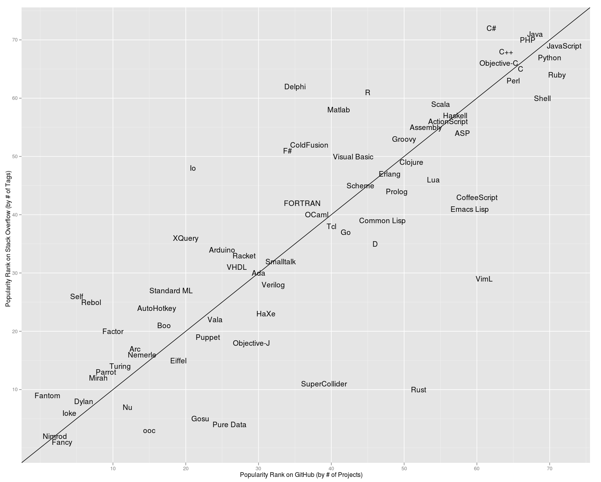
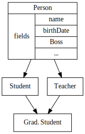
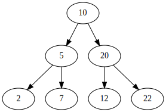
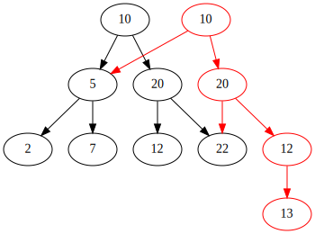
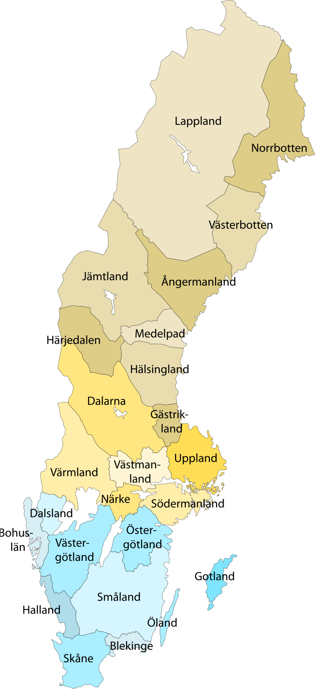
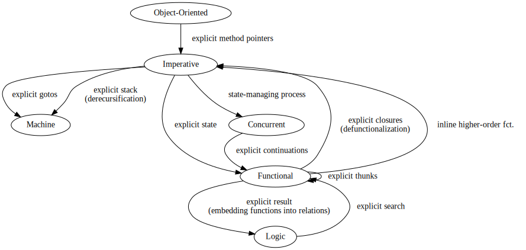

Programming Paradigms: Lecture Notes
Table of Contents
- 1. ✪ What is a "programming paradigm"?
- 2. Prelude: Abstraction and Types
- 3. Imperative programming
- 3.1. Model: von Neumann computer
- 3.2. Example: Sorting
- 3.3. Transformation: Loops ⟶ Gotos
- 3.4. Transformation: If then else ⟶ Gotos
- 3.5. Reverse transformation: (Gotos ⟶ Loops)
- 3.6. Transformation: inlining procedure calls
- 3.7. Feature: parameter passing by value
- 3.8. Feature: parameter passing by reference
- 3.9. Remark: on side effects
- 3.10. Transformation: Procedures ⟶ Gotos & Variables
- 3.11. Recursion
- 4. ✪ Interlude: Garbage Collection
- 5. Object-oriented programming
- 6. Functional programming
- 7. Concurrent programming
- 7.1. Disclaimer: Concurrent programming ≠ Parallel programming
- 7.2. Motivation: the world is concurrent
- 7.3. Process
- 7.4. Shared state (aka Concurrent + Imperative)
- 7.5. Paradigm: Concurrent + Functional
- 7.6. Channels
- 7.7. Understanding the tradeoffs
- 7.8. ✪ Some erlang peculiarities
- 7.9. Exercise: remote procedure call.
- 7.10. Concurrency via Continuations
- 8. Logic programming
- 8.1. Notion: Proposition
- 8.2. Notion: Free variables, open and closed propositions
- 8.3. Curry
- 8.4. Paradigm
- 8.5. Example: family tree
- 8.6. Example: Map coloring
- 8.7. Notion: ground terms
- 8.8. Transformation: Functions to relations
- 8.9. Unification
- 8.10. Transformation: Relations to Functions
- 8.11. Search in general
- 9. Outlook
- 10. ✪ Postlude: Where to go from here?
- 11. Local Words (ignore)
1 ✪ What is a "programming paradigm"?
1.1 Definition
Paradigm: "A philosophical and theoretical framework of a scientific school or discipline within which theories, laws, and generalizations and the experiments performed in support of them are formulated; broadly: a philosophical or theoretical framework of any kind"
1.2 Paradigms as "ways of organizing thought"
Programming paradigm
=
The basic structuring of thought underlying the programming activity
e.g.. when you think of a programming problem, what are you thinking of?
- the sequence of actions to perform (first download the file, then display it)
- how to divide the problem-space into sub-tasks (to compute the spanning tree, i can divide the graph arbitrarily in two, and then …)
- what are the agents involved (sensors, a simulator, a renderer, …)
- what data do we need to handle? do we need intermediate representations? what are the relations between the different forms?
Note that the same way of thinking is not adapted to all problems. Hence, it is important to know many paradigms!
- To each paradigm corresponds a "(mental) model of the computer"
How do you think of your computer?
- A bunch of transistors? (Very hard to reason at this level…)
- (∗) Memory + instructions (von Neumann model)
- (∗) Rewriting engine (substitution model)
- (evaluator of) Mathematical functions
- (∗) A network: a number of units of execution communicating with messages
- (∗) A prover of theorems (search model)
- …
(∗) We will see these in the course.
- Quotes on the ability to think "big thoughts"
- Anecdote: MULTICS
- "Language as thought shaper", from http://soft.vub.ac.be/~tvcutsem/whypls.html
To quote Alan Perlis: "a language that doesn't affect the way you think about programming, is not worth knowing."
The goal of a thought shaper language is to change the way a programmer thinks about structuring his or her program. The basic building blocks provided by a programming language, as well as the ways in which they can (or cannot) be combined, will tend to lead programmers down a "path of least resistance", for some unit of resistance. For example, an imperative programming style is definitely the path of least resistance in C. It's possible to write functional C programs, but as C does not make it the path of least resistance, most C programs will not be functional.
Functional programming languages, by the way, are a good example of thought shaper languages. By taking away assignment from the programmer's basic toolbox, the language really forces programmers coming from an imperative language to change their coding habits. I'm not just thinking of purely functional languages like Haskell. Languages like ML and Clojure make functional programming the path of least resistance, yet they don't entirely abolish side-effects. Instead, by merely de-emphasizing them, a program written in these languages can be characterized as a sea of immutability with islands of mutability, as opposed to a sea of mutability with islands of immutability. This subtle shift often makes it vastly easier to reason about the program.
Erlang's concurrency model based on isolated processes communicating by messages is another example of a language design that leads to radically different program structure, when compared to mainstream multithreading models. Dijkstra's "GOTO considered harmful" and Hoare's Communicating Sequential Processes are pioneering examples of the use of language design to reshape our thoughts on programming. In a more recent effort, Fortress wants to steer us towards writing parallel(izable) programs by default.
Expanding the analogy with natural languages, languages as thought shapers are not about changing the vocabulary or the grammar, but primarily about changing the concepts that we talk about. Erlang inherits most of its syntax from Prolog, but Erlang's concepts (processes, messages) are vastly different from Prolog's (unification, facts and rules, backtracking). As a programing language researcher, I really am convinced that language shapes thought.
1.3 Paradigms and Languages
Paradigms are underpinned by programming language features.
"If you cannot formulate it, you can't think it"
- The big-bang of languages

(image credit: http://redmonk.com/sogrady/2012/02/08/language-rankings-2-2012/)
- In the old days: languages were built around a central idea, crystallized in a paradigm.
- Explosion in the number of languages
- Now, there is a lot of cross-fertilization between languages: real-world languages implement apparently random collections of features.
- A given paradigm needs a specific set of features to be supported.
The situation is summed up in this diagram
See also: http://langpop.com/
- PL Features we will see
- Structured data / Records
- Procedure
- Recursion
- Naming and abstraction (higher order)
- Memory (cell) / State
- Processes
- Communication channels
- Unification
- Search
1.4 Fluidity between paradigms
As a working programmer, you will often look at a program and think: "this is a big mess". Your problem is to make sense of this mess. Perhaps the code was written using the "wrong" paradigm; perhaps the features to support the paradigms are not available to the programmers, and they used a wrong method for the implementation.
- We will learn to properly encode features using others
- By doing so we will also learn to recognize "a mess" as an encoding of some feature(s) into others.
1.5 ✪ A remark on paradigm shift
After writing many programs, you may notice patterns emerging. These patterns may become codified, either informally (cf. "Design Patterns", the seminal book) or formally within the language (cf. Haskell type-classes).
Eventually, all programming may revolve around a number of patterns; the old ways are abandoned. This is the paradigm shift: a new way of thinking appears. Eventually, a new programming language may be developed to support the "patterns" directly.
2 Prelude: Abstraction and Types
Types are essential to get a quick overview of what a program is "about". Very useful when facing unknown programs! We use them a lot in this course to structure the thinking about programs.
The colon ':' is used to denote the typing relation:
someValue : ItsType
- Examples
- 0 : Int
- 1 : Int
- 1 : Natural
- 'c' : Char
- "hello" : String
- 0.5 : Float
- (1/2) : Rational
- Feature: naming things
One could write a program to compute the area of the floor of the copper-dome as follows, assuming the floor is a circle of radius 20 meter.
area = 20 * 20 * 3.141592
It is error-prone to write the radius multiple times. (if someone were to give a better measure for the radius, or a better approximation for π, I might forget to update one of the instances in the program.) Furthermore it might be useful to give a meaningful name to the value. Hence most programming languages allow you to write:
radius = 20 pi = 3.141592 area = radius * radius * pi
- Feature: Parametrization and function types
Now is a good time to see our first programming language feature. This feature is so ubiquitous that nearly every language has it. (Can you think of a counter-example?). In fact, you may not have thought of it as a "feature" at all so far. We are talking about the ability to abstract over parameters.
Consider a simple value like this:
greetMe : String greetMe = "Hello, Jean-Philippe! How are you today?"
That's very useless as a program! We want to be able to greet more than one person. To do so, we should and parametrize (or abstract) over the name of the person greeted.
As an intermediate step, let us name the part we wish to abstract over:
name = "Jean-Philippe" greet = "Hello, " ++ name ++ "! How are you today?"
Now, we can leave the name abstract. (Most programming languages require the programmer to mark abstract things explicitly. In this example we write the parameter inside parentheses):
greet(name) = "Hello, " ++ name ++ "! How are you today?"
When using abstraction, programs get more complicated. In particular, it might not be so clear that every value can be used for the parameter. What if
nameis a floating point number? In this simple example it is pretty obvious, but in reality things get hairy pretty fast.In our example, we may declare that the above code makes sense only when
nameis a string (more precisely any string); and in that casegreet(name)is also a string. Equivalently, we will say thatgreetis a function converting a string into another string, and we will write:greet : String → String
The flip side of abstraction is application (or use). Given an abstract piece of code, one can use it as many times as desired on concrete cases.
greet "dog" greet "there children!"
Philosophical remark: if there is no application possible; abstraction is useless — so they really are two sides of the same coin.
Benjamin Pierce's "Good Language" test: Can you abstract over everything you can name?
- Aside: Functions as a sepcial kind of relations?
(Will be revisited when we see logic programming) You may have encountered the arrow notation for types earlier in your studies, in the context of maths. Usually, math is built on top of set theory, and hence functions are defined as a special kind of relation. (We will revist this idea in the chapter on logic programming.)
However, in this course, we take the view that arrow (function) type is a primitive (foundational) notion, based on the intuition discussed above.
- Exercises: types of the following
- factorial : ?
- π : ?
- sin : ?
- × : ? (multiplication)
- derivative : ? (or ∫ : ?) (review this question after FP paradigm…)
- hint: remember that derivative maps sin to cos.
(answers given in exercise sheet)
- Model: substitution
- The meaning of application is substitution.
area 20 ⟶ (\r -> r * r * pi) 20 ⟶ 20 * 20 * pi ⟶ 400 * pi ⟶ …
- remember 'inlining'
inlining usually means 'substitution' of the reference by its value.
- pitfall: name-capture
Example:
area r = let r2 = r * r in r * pi
ringArea r1 r2 = area r2 - area r2
To avoid name-capture (or any kind of side-effect) evaluate the arguments first!
- Programmatically
- The meaning of application is substitution.
- ✪ Teaser: Higher-order abstraction
Will be revisited when we see functional programming.
"What can be named/abstracted on" is an important characteristic of programming languages. Consider you favorite programming language. Does it support abstraction over:
- integers?
- characters?
- strings?
- arrays?
- matrices?
- blocks of code?
- functions?
- types?
- modules?
- …
Higher-order functions refer to functions which are parametrized by other functions.
Higher-order abstraction is useful because
- it is theoretically as powerful as possible (Every other feature can be reduced to higher order abstraction)
- it is very useful in practice, as we shall see in the chapter on functional programming.
Typically in mathematics abstraction is unrestricted. Consider for example the types of derivative and integrals!
3 Imperative programming
3.1 Model: von Neumann computer
"von Neumann" model of the computer:
- Memory cells
- Program (assignments, arithmetic, logic, (conditional) jumps)
This is similiar to what you may find in a cookbook:
Ingredients:
- Pasta
- Water
- Boil water
- Throw pasta in water
- Taste
- if too hard, then goto 2.
(cf. cookbook… for beginner cooks :)
- Programmatically
- Model: Turing machine
An idealised version of the von Neumann computer is the "Turing Machine" (invented by Alan Turing). The memory of the turing machine consist of an infinitely-long 1-dimensional tape divided into equal-size pieces each containing one bit.
The "computing" is performed by a transition function from the internal state of the machine, and the current symbol on the tape, to a new state and an instruction, which can be either to move the tape or write a symbol (bit) at the current position.
This extremely idealised machine is interesting from a theoretical viewpoint, because it is at least powerful as the von Neumann computer, while being even simpler. Furthermore, any computer (and any programming interface built on top of it) can be reduced to a Turing machine.
A programming language is said to be "Turing-complete" if one can do as much as a Turing machine in it.
3.2 Example: Sorting
- Feature: GOTO
A pretty basic feature of imperative language is the jump (also known as "GOTO"). A goto is an instruction to jump to a particular point in the program. Sometimes, a contition is associated with the jump: the jump is performed only if the condition is true.
Based on your understanding of GOTO, try to figure out what the following code does. Do you find it easy to understand? In the next section we will propose an improvement.
-- Assume A : array of comparable items begin: swapped = false i := 1; loop: if A[i-1] <= A[i] goto no_swap swap( A[i-1], A[i] ) swapped = true no_swap: i := i+1 if i < n then goto loop if swapped goto begin - Feature: Loops & Ifs
It has been noted that programs written using only gotos in arbitrary ways are pretty hard to understand. (One sometimes refers to this sort of programs as "spaghetti code")
Therefore, usage of gotos should be restricted to a few easy patterns (loops; or conditional execution). Nowadays gotos have almost disappeared from usage and all code is written using special-purpose instructions for the above patterns. This is an instance of paradigm shift.
Here is a program doing the same as the above, but using only loops and if. Is it easier to understand?
-- Assume A : array of comparable items swapped = true while swapped swapped = false for each i in 1 to length(A) - 1 inclusive do: if A[i-1] > A[i] then swap( A[i-1], A[i] ) swapped = true end if end for - Feature: procedures
The above code is parametric over the array
A. If the language supports abstraction over arrays we should take advantage of it and present the above program as a procedure.procedure bubbleSort( A : array of comparable items ) swapped = true while swapped swapped = false for each i in 1 to length(A) - 1 inclusive do: if A[i-1] > A[i] then swap( A[i-1], A[i] ) swapped = true end if end for end end procedure - Extra reading
It has not always been clear that GOTO was a bad idea. Dijkstra is perhaps the famous opponent of GOTO:
GOTO statement considered harmful, E. G. Dijkstra
3.3 Transformation: Loops ⟶ Gotos
The pattern in this course will be to understand a feature by translation into other, known features. To get warmed up, we will do so with a feature we already understand well; namely loops.
- Source
Consider the following loop:
while i > 0 do a[i] := b[i] i := i-1
- Target
It can be encoded into the following code, which uses only (conditional) jumps:
test: p := not (i>0) if p then goto done a[i] := b[i] i = i-1 goto test done:
Note in passing that such a job is typically performed by a C (or Java…) compiler. Indeed, the computer code has no notion of loop, it only knows about jumps.
- Feature: do … until
do body until cond
is translated to
loop: body if not (cond) goto loop;
In fact the above transformation is parametric on the condition and body of the loop. Hence we may just abstract over these parts. We will present the next transformation in this format.
- In-class exercise: insertion sort
#include <stdio.h> void sort (int a[], int n) { int i,j; for (i=1; i<n; i++) { // invariant: the array is sorted up to and excluding i. int tmp = a[i]; j = i; /* printf ("Iteration i=%d, tmp=%d\n", i, tmp); */ while (j > 0 && tmp < a[j-1]) { // invariant: tmp is smaller than a[j] to a[i+1] a[j] = a[j-1]; j = j-1; } a[j] = tmp; } } int input[9] = {34,23,435,124,5,4,1235,123,4}; int main () { sort(input,9); int i; for (i=0;i<9;i++) printf("%d\n",input[i]); return 0; }#include <stdio.h> void sort (int a[], int n) { int i,j; i = 1; loop: if (! (i<n)) goto loopEnd; // invariant: the array is sorted up to and excluding i. int tmp = a[i]; j = i; /* printf ("Iteration i=%d, tmp=%d\n", i, tmp); */ innerLoop: if (!(j > 0 && tmp < a[j-1])) goto innerLoopEnd; // invariant: tmp is smaller than a[j] to a[i+1] a[j] = a[j-1]; j = j-1; goto innerLoop; innerLoopEnd: a[j] = tmp; i++; goto loop; loopEnd: } int input[9] = {34,23,435,124,5,4,1235,123,4}; int main () { sort(input,9); int i; for (i=0;i<9;i++) printf("%d\n",input[i]); return 0; }
3.4 Transformation: If then else ⟶ Gotos
- Source
Assuming a Boolean-valued expression
condand two blocks of codepart1andpart2, and the following pattern:if cond then part1 else part2
- Target
It can be translated into:
p := not(cond) goto label2 when p is true part1 goto done label2: part2 done:
- Computed jumps
Most computers also feature computed (indirect) jumps. That is, one does not jump to a fixed label, but to a variable one. This is once more an example of abstraction: the computed goto is a goto which is "abstract" over its target.
For example using a computed jump one may translate
ifas follows:if cond then target = label1; else target = label2; goto target label1: part1 goto done label2: part2 end done:
Can you figure out the type of the
targetvariable? (Answer: pointer to code)Remark: Computed jumps are not present in C or C++.
- Remark: goto+if vs. conditional jump
It is trivial to convert back and forth between an if statement with a single goto in the body and a conditional jump, so we consider them equivalent in this course.
3.5 Reverse transformation: (Gotos ⟶ Loops)
The reverse transformation (from jumps to structured constructions) is not so easy. That is, there is no general formula that gives you structured/"beautiful" code from "spaghetti" code made up of arbitrary gotos. Inventing a beautiful structure requires a creative leap! A good first step is to try to recognize the patterns generated above and reconstruct the source from them… But it fails on true spaghetti code.
3.6 Transformation: inlining procedure calls
This is the reverse of naming code blocks.
3.7 Feature: parameter passing by value
Passing a parameter by value is equivalent to making a copy of the parameter before passing it to the function procedure.
This means that, if the function/procedure updates the parameter, the argument remains untouched at the call site.
This is what happens in C (pitfall: arrays) and (by defaut) in C++.
void updateOrNot(int x) {
x = 12;
}
int main(void) {
int x = 56;
updateOrNot(x);
return x;
}
// use echo $? to see the result
// substitution model meaning?
3.8 Feature: parameter passing by reference
- Example
#include <stdio.h> void updateOrNot(int &y) { y = 12; } int main(void) { int x = 56; updateOrNot(x); printf("%d\n",x); return x; } // use echo $? to see the result // substitution model meaning? // von neumann model meaning? - Meaning in the substitution model
Consider a declaration of the procedure 'swap' together with a number of calls:
procedure swap(by reference x, by reference y) local var tmp; tmp := y; y := x; x := tmp;
swap(x,y) ... ... swap(x,y) ... ... swap(x,z)
It is equivalent to the following program:
tmp := x; y := x; x := tmp; ... ... tmp := x; y := x; x := tmp; ... ... tmp := x; z := x; x := tmp;
In other words: if parameters are passed by reference, calling the function/procedure is equivalent to copying its body at the call site. (pitfall: name capture; side effects)
- Why is passing by reference useful?
- Passing by reference means that the programmer can name blocks of code.
- "expressive power" : you can factor out parts of the computation that update any (sub-part of) the state
- save time : no need to copy around things
- Reminder: References (aka. pointers)
- Example
#include <stdio.h> int x = 777; int y = 888; int* p = &x; int main () { printf("%lx\n", (long) &p); printf("%d\n", *p); return 0; } - Addresses
Assume a variable x:
x : Integer {-Variable -} x : int;Then
addressOf(x) : PointerTo Integer &x : int*;
≃ where in the memory is the variable x
We could express this with the following typing for
addressOf:addressOf : Integer {-By Ref-} → PointerTo Integer - "De-reference"
variableAt : PointerTo Integer → Integer
or
p : Integer ⊢ variableAt(p) : Integer
or, borrowing some C syntax
p : int ⊢ *p : int
- Trivia: whats the meaning of addressOf(addressOf(x))?
none! because addressOf(x) is just a value, there is no location for it in the memory.
- Example
- Translation: from reference-parameters to pointers
We can give a meaning to reference parameters in the von Neumann model as well, by using pointers.
- Source:
(Supposing the language supports passing arguments by reference:)
procedure increment(by ref. x : Int) x := x + 1
with a call
increment(y)
or in C++ syntax:
void increment(int &x) { x = x+1; }with a call
increment(y);
- Target
(Assuming the language supports pointers:)
increment(x : PointerTo Int) variableAt(x) := variableAt(x) + 1
and the call
increment(addressOf(y))
or in C syntax:
void increment(int *x) { *x = *x+1; }with a call
increment(&y);
- Source:
- Exercise: Does Java use call by reference?
Show example(s) that says yes or no (see exercise sheet for an answer)
3.9 Remark: on side effects
When inlining a function, one may duplicate the arguments (or place them somewhere else in the code); and so one must wonder whether inlining will duplicate the side-effects associated with these arguments.
In the by-value case, even if there were side effects in the arguments, inlining will not duplicate them since we have to first copy their value to a temporary variable.
In the by-reference case, the situation is more complex. In most cases, the argument won't have a side effect since it must be a memory location. If the argument is an effectful expression computing a memory location, then we must use the translation to pointers before inlining.
To be safe: evaluate the arguments before inlining.
3.10 Transformation: Procedures ⟶ Gotos & Variables
Source:
function sqrt(x : Float) : Float
result := x / 2
while distance (result * result, x) > ε
-- Newton approx to refine the result
...
return result;
-- the calls:
sqrt(12345);
...
...
sqrt(6789);
Target:
sqrt: -- argument in global variable 'sqrtArgument' sqrtResult := sqrtArgument / 2; -- And then newton algorithm ... ... -- at this point, sqrtResult contains the result. goto sqrtCaller; sqrtArgument := 12345; sqrtCaller := out1; goto sqrt; out1: ... ... sqrtArgument := 6789; sqrtCaller := out2; goto sqrt; out2:
In sum, the translation of a call is:
- copy the arguments to the variables corresponding to the parameters;
- save the return address in a variable;
- goto the procedure's code.
At the end of the procedure/function, one must
- put the result in a global variable. (if applicable)
- add an explicit jump to the caller.
3.11 Recursion
- Understanding recursion using the substitution model
Start:
procedure fib(int x) if x <= 1 then return 1; else tmp := fib (x-1) return tmp + fib(x-2);Inlining the 1st procedure call:
procedure fib(int x) if x <= 1 then return 1; else if x-1 <= 1 then return 1; else tmp2 := fib (x-2) tmp := tmp2 + fib(x-3); return tmp + fib(x-2);We end up with more calls than we started! The process never finishes!
As a model for procedure calls, inlining/substitution is
- OK as a dynamic model: it works on concrete programs. For example
expanding
fib(5)eventually terminates to a concrete integer - Not OK as a static model in the presence of recursion, unless one understands infinite programs.
- OK as a dynamic model: it works on concrete programs. For example
expanding
- Transformation: Recursion ⟶ Explicit stack
In case of a recursive call, the steps 1. and 2. above are problematic. Indeed, they will overwrite the previous value! Hence one must use a new location each time: use a stack.
The translation of a call then becomes:
- push the arguments to the variables corresponding to the parameters on a stack;
- push the return address;
- goto the procedure's code.
- pop
… and the translation of the procedure/function must access its parameters/return address on the stack.
(note that the result may remain a global: it is not used in the body of the function)
- Example: factorial.
The following example shows step-by-step how to transform recursion to jumps+stack.
#include <stdio.h> #include <stdlib.h> struct stack{ int x; int caller; struct stack* next; }; typedef struct stack* stk; stk s = NULL; void push(int x,int ret) { stk t = malloc(sizeof (struct stack)); t->x = x; t->caller = ret; t->next = s; s = t; } void pop() { s = s->next; } // original int fact1 (int x) { if (x == 1) return x; else return x * fact1(x-1); } // make order of eval. explicit int fact2 (int x) { int tmp; if (x == 1) return x; else { tmp = fact2(x-1); return x * tmp; } } // put result in a global var int result; int fact3 (int x) { int tmp; if (x == 1) result = x; else { fact3(x-1); tmp = result; result = x * tmp; } return result; } // put arguments on a stack void fact4() { if (s->x == 1) result = 1; else { push(s->x-1,0); fact4(); pop(); result = s->x * result; } } // put the return address on the stack and do the jumps by hand void fact5() { fact5: if (s->x == 1) result = 1; else { push(s->x-1,1); goto fact5; lab1: pop(); result = s->x * result; } if (s->caller == 1) goto lab1; } // put the stack initialisation in the function int fact6 (int x) { push(x,0 /* 0 represents top-level call */); start: if (s->x == 1) { result = 1; } else { /* result = fact(x-1); */ push(s->x-1,1 /* 1 represents the recursive call */); goto start; lab1: pop(); result = s->x * result; } /* goto s->caller; (invalid C; we must encode it)*/ if (s->caller == 1) goto lab1; return result; } // re-construct loops int fact7 (int x) { push(x,0 /* 0 represents top-level call */); // !! not quite right: if s->x is == 1, return immediately while (!(s->x == 1)) { push(s->x-1,1 /* 1 represents the recursive call */); }; result = 1; do { pop(); result = s->x * result; } while (s->caller == 1); return result; } // 1. pre-work: make order of evaluation explicit // 2. put result in a var // 3.a use the stack instead of argument // 3.b return address on the stack // 3.c prologue/epilogue (push 1st stack frame) // 4. transform the call into gotos // 6. encode translate computed goto int main(){ printf("%d\n",fact7(10)); return 0; }
- Transformation: Tail Recursion ⟶ Loop
- Transformation: tail-call elimination
The pattern
push (arguments,locals,caller) caller := continue goto fact continue: pop (arguments,locals,caller); result := result // forward the result from the inner call goto caller
can be optimised. Indeed:
- The local variables are saved for nothing: they are not used after they are popped!
- The result := result statement is useless.
- In turn, saving the arguments, etc. is also useless, since one jumps back to the caller immediately, where they will be popped from the stack.
Hence we obtain the pattern
top_of_stack := (arguments,locals) push(caller); caller := continue goto fact continue: pop(caller); goto caller
(Another, simpler way to explain this optimisation is that the last call can overwrite the previous values, since they will never be used again)
But the only thing we do after the call is to pop the caller and jump back… So we might as well not jump to the piece of code labeled
continue, and let the caller do the cleanup job.top_of_stack := (arguments,locals) // do not overwrite the pointer to the caller goto fact
This is called tail-call elimination.
In the case of the factorial function, there are only tail calls, so the stack can be removed altogether!
- Example
We will explain the transformation by using another algorithm to compute the factorial.
function fact (n:Int,acc:Int) if n = 0 then return acc else return fact(n-1,n * acc) -- assuming that fact will be called with (acc = 1) from the outside: function wrapper(n:Int) return fact(n,1);The algorithm works by keeping the product of from
nto the desired value in the parameteracc.#include <stdlib.h> #include <stdio.h> struct stack{ int x; int y; int ret; struct stack* next; }; typedef struct stack* stk; stk s = NULL; void push(int x,int y,int ret) { stk t = malloc(sizeof (struct stack)); t->x = x; t->y = y; t->ret = ret; t->next = s; s = t; } void pop() { s = s->next; } int fact1 (int x,int y) { if (x == 1) return y; else return fact1(x-1,y*x); } // make order of eval. explicit int fact2 (int x,int y) { if (x == 1) return y; else { y = y*x; x = x-1; return fact2(x,y); } } // put result in a global var int result; void fact3 (int x,int y) { if (x == 1) result = y; else { fact3(x-1,y*x); } } // put arguments on a stack void fact4() { if (s->x == 1) result = s->y; else { push(s->x-1,s->y*s->x,0); fact4(); pop(); } } int label1 = 0; int stop = 1; // put the return address on the stack and do the jumps by hand void fact5() { fact5: if (s->x == 1) result = s->y; else { push(s->x-1,s->y*s->x,label1); goto fact5; label1: pop(); } if (s->ret == label1) goto label1; } // tail-call optim. (no need to save on the stack: we return before we // can make any use of the saved stuff) void fact6() { fact6: if (s->x == 1) result = s->y; else { s->y = s->y*s->x; s->x = s->x-1; goto fact6; label1: ; } if (s->ret == label1) goto label1; } // remove dead code void fact7() { fact7: if (s->x == 1) result = s->y; else { s->y = s->y*s->x; s->x = s->x-1; goto fact7; } } //note now there is max 1 frame in the stack // return the result as for a normal function. int fact8(int x) { int y = 1; start: if (x == 1) result = y; else { y = y*x; x = x-1; goto start; } return y; } // recreate a loop int fact9(int x) { int y = 1; while (x /= 1) { y = y*x; x = x-1; } return y; } int main(){ printf("%d\n",fact1(5,1)); printf("%d\n",fact2(5,1)); fact3(5,1); printf("%d\n",result); push(5,1,stop); fact4(); pop(); printf("%d\n",result); push(5,1,stop); fact5(); pop(); printf("%d\n",result); push(5,1,stop); fact6(); pop(); printf("%d\n",result); push(5,1,stop); fact7(); pop(); printf("%d\n",result); printf("%d\n",fact8(5)); printf("%d\n",fact9(5)); return 0; } - Conclusion
Tail calls and loops are essentially equivalent: they are two different manifestations of the same computing structure.
- Transformation: tail-call elimination
- Other example: Tour de Hanoi
4 ✪ Interlude: Garbage Collection
aka. Automatic memory management The memory is freed automatically for you! (Magic!?)
- Nah, chase pointers. (but what is a pointer)?
Why GC discussed here?
- Allows for much easier OOP (sharing)
- Practically impossible to do FP/Logic programming without it (sharing)
4.1 Question
Firefox uses a GC, but still, it is leaking memory. What is going on?
4.2 Question
Why are imperative languages usually not using GC?
5 Object-oriented programming
5.1 Coupling data and related code
- Example: Date
#include <cstdio> class Date { private: int year, month, day; // invariant: month >= 1 && month <= 12 && ... day ... public: void check_invariant() { // (in reality this should be more clever) if (month <= 12 && month >=1 && day >= 1) //; day <= number_of_days_in(month); { // OK } else { // if we come here it means that the class breaks its own // invariant. That is: is is badly implemented. // throw badly_implemented_class; } } void shiftBy(int days) { day += days; // in reality this should be more clever } void show() { printf("%d-%d-%d\n",year,month,day); } Date(int y, int m, int d) { year = y; month = m; day = d; // check that we have a valid date here } Date() { day = 3; month = 2; year = 2013; // initialise to today's date by querying the OS } }; int main () { Date appointment; // calls the default constructor appointment.shiftBy(7); appointment.show(); }- Translation: object ⟶ records + procedures
#include <cstdlib> #include <cstdio> struct Date { int year, month, day; }; void check_invariant(Date* this_) { // (in reality this should be more clever) if (this_->month <= 12 && this_->month >=1 && this_->day >= 1) //; day <= number_of_days_in(month); { // OK } else { // if we come here it means that the class breaks its own // invariant. That is: is is badly implemented. // throw badly_implemented_class; } } void shiftBy(Date* this_, int days) { check_invariant(this_); this_->day += days; while (this_->day > 31) { this_->day -= 31; this_->month ++; } // (in reality this should be more clever) check_invariant(this_); } void show(Date* this_) { printf("%d-%d-%d\n",this_->year,this_->month,this_->day); check_invariant(this_); } Date default_constructor() { Date this_; this_.year = 2014; this_.month = 1; this_.day = 29; // in reality: initialise to today's date by querying the OS check_invariant(&this_); return this_; } int main () { Date appointment = default_constructor(); // calls the default constructor shiftBy(&appointment,7); show(&appointment); } - Note: calling convention
Objects are, almost always, passed by reference.
Methods often update the object they are applied to. If you want to be able to call such methods, you better have a reference to it.
See also the Java calling convention (exercises).
- Translation: object ⟶ records + procedures
5.2 Encapsulation
Mechanisms to make the fields private; such fields are then accessible only via (public) method.
- Paradigm: Abstract Data Type (ADT)
- Example: "stack", "priority queue", … from your data structures course
- Every data type comes with a specification (a class invariant)
- … maybe in the form of unit tests
- Notion of data-invariant:
- a condition which the representation must verify at all times
(seen form outside the object)
- Advantage: it is easy to change representation of data
- Dogma: never any direct field access (cf. "set" and "get")
- Note: not every piece of data fits the ADT model. Example: "Person" record.
- TODO ✪ Exercise
Write a unit test for a valid date, and call it at appropriate points in the
Dateclass - TODO ✪ Exercise
Change the representation of the Date class to a single integer which counts the number of days since Jan 1st 2000.
5.3 Inheritance
- Example
Simple example of inheritance:
#include <cstdio> class Animal { public: virtual void sound() { printf("huh?\n"); } }; class Dog : public Animal { public: virtual void sound() { printf("woof!!!\n"); } }; class Cat : public Animal { private: int times; public: virtual void sound() { // super.sound(); times++; printf("meow %d\n", times); } Cat () { times = 0; } }; // Make two derived classes; at least one should have a state. // Test code: void test(Animal* a) { a->sound(); } void test2(Animal a) { a.sound(); } main() { Cat a; //TODO: Test on the derived class test2(a); test2(a); // test2(a); } - Transformation: embed method pointers
The above example gets translated as follows:
#include <cstdio> struct Animal { void (*sound)(Animal*); }; void animal_sound(Animal* this_) { printf("huh?\n"); } // Pay attention: constructor needs to set the method pointers. struct Animal construct_animal() { // TODO Animal a; a.sound = animal_sound; return a; } //////////////// struct Cat { void (*sound)(Cat *); int times; }; void cat_sound(Cat* this_) { animal_sound(reinterpret_cast<Animal*>(this_)); this_->times++; printf("meow %d\n", this_->times); } // Pay attention: constructor needs to set the method pointers. struct Cat construct_cat() { // TODO Cat a; a.sound = cat_sound; a.times = 0; return a; } //////////////// struct Dog { void (*sound)(Dog *); }; void dog_sound(Dog* this_) { printf("woof!!!\n"); } // Pay attention: constructor needs to set the method pointers. struct Dog construct_dog() { // TODO Dog a; a.sound = dog_sound; return a; } // In derived classes, added fields should come after. // Translate test code. // Test code: void test(Animal* a) { a->sound(a); } void test2(Animal a) { animal_sound(&a); } main() { Cat a = construct_cat(); //TODO: Test on the derived class // test(reinterpret_cast<Animal*>(&a)); test2(*reinterpret_cast<Animal*>(&a)); }- Question: what happens on line (1)
a->soundis a function pointer;- the function stored in that variable is called.
- if
a->soundhas been correctly set, either dog/cat case will be called. - note the indirect call
- Question: why are is cast (2) valid?
The layout of the parent class is exactly the same as that of the subclass.
- Question: what if the Dog class had an extra method/field?
(In general, there can be more fields/methods in the subclass, found after the fields of the top class)
- Question: could you copy objects instead of passing by reference?
No! If one passes a copy, the inherited methods/fields are not accessible when doing an "upcast". This means that, when one calls a method which is overriden, it could try to access fields that are not present.
In C++: the method pointer is accessed only if the object is a reference.
- Question: what happens on line (1)
- Liskov substitution principle and Polymorphism
if class
Binherits classA, then, for any x,x : B ⇒ x : A
This means that
xhas multiple types- That is: whenever a function
fhas an parameter of typeA, one can pass an argument of typeB. By deriving fromA, a lot of code is automatically ready to work withB. (Conversely, if you write code working forA, it will be useful in many contexts)
This is one instance of an important phenomenon: polymorphism. The kind of polymorphism linked with inheritance is inclusion polymorphism. Recall the definition of set-inclusion:
B ⊆ A iff x ∈ B ⇒ x ∈ A
One says that
Bis a subtype ofA.Liskov proposes the principle:
if
Ais a subtype ofBand prove a property about any object ofA, then it should be true of any object of typeB.This is somewhat stronger than the definition of having multiple types given above.
Read (✪) more about polymorphism and the substitution principle on Wikipedia.
- What happens when functions have arguments?
In many languages, the type of the arguments of derived functions must be the SAME as that of the overridden function.
- Co/Contra-variance (⋆⋆⋆)
A perhaps natural expectation is that you could make the arguments change as the type of the object. Ex.:
class Additive method Add(Additive) class Integer extends Additive method Add(Integer)
… but in fact this violates the substitution principle!
See also the wikipedia article.
- Exercise
Use the above two classes in a way that shows violation of substitution.
- Co/Contra-variance (⋆⋆⋆)
- Extension (✪): method tables
Is the
soundfunction pointer ever modified? No!- How can we save space if there are many methods per class?
⟶ Use one more indirection!
- group the method pointers in a single table per class. Each object then points to this table.
- Paradigm: inheritance everywhere
- Multiple "cases" can be implemented by inheriting a common class
- Dogma: no "if".
- Specific behavior is implemented in derived methods
- Open question: multiple dispatch!
- ✪ Reading/Exercise: Javascript prototypes
5.4 Multiple-inheritance & interfaces
- Motivation
Save work:
- Better reuse of code (possibly the derived class can use code from both its parents)
- More polymorphism!
Examples:
class Computer class Phone class SmartPhone inherits Computer, Phone
class Teacher class Student class GradStud inherits Teacher, Student
- Diamond problem
- On a conceptual level:

Does a grad student have two names? … no Does a grad student have two bosses? … yes (one as a teacher and one as a student). BUT some other fields might need to be duplicated, if they have a
⟶ Big headache
- On an implementation level:
class Person Name BirthDate class Student inherits Person CourseGrade ... class Teacher inherits Person numberOfStudents ... class GradStud inherits Student, Teacher
What is the record corresponding to GradStud? If we copy all the fields, we get:
Name BirthDate CourseGrade Name BirthDate numberOfStudents
The record can be casted to Student (as normal, the 3 last fields will never be accessed by methods in the Student class) or Teacher (by adding 3 to the pointer).
Aside: what if a method in the class Student updates the Name? Then there is a problem: the gradstudent will end up with 2 different Names!
Let's say we want to have a single copy of Name and BirthDate:
Name BirthDate CourseGrade numberOfStudents
Problem: what happens if you see the GradStud as a Teacher? The translation to "pure" imperative programming becomes much more complicated.
- On a conceptual level:
- Interfaces
As it is often the case, the issue is due to side effects (hidden modification of state). It appears only if the shared class has mutable fields. An important case of immutable fields are methods (their code is fixed once an for the lifetime of the object, in fact it is the same for all objects in a class). Hence the notion of Interface: a class without fields. In Java, there is special support for interfaces, and one can inherit many of them.
In sum, interfaces are for multiple subtyping but not multiple inheritance: polymorphism is well-supported, but not code-reuse.
5.5 Forward reference: ``objects are poor man's 6.5.2''
Note the similarity between objects and closures: they are both encoded as state/environment + function. pointer.
In particular, in the Observer pattern, the Observer interface can be advantageously replaced by a function, making registerObserver a higher-order function.
5.6 TODO Traits; Objects as fix-points (✪)
6 Functional programming
6.1 A bit of syntax
- Function definitions
Similar to mathematical notation:
minimum (x,y) = if x < y then x else y - (λ) abstractions / local functions
In the literature:
minimum = λ(x,y). if x < y then x else yIn Haskell:
minimum = \(x,y) -> if x < y then x else y - Application is LEFT associative.
- No need for parentheses:
f x == f(x)
- Left leaning:
f x y == (f x) y == (f(x))(y)
- No need for parentheses:
- Function arrow is RIGHT associative
a -> b -> c == a -> (b -> c)
- Reading (as much as necessary to understand Haskell syntax)
6.2 Algebraic Types
In this subsection we will refine our understanding of the type structure, which we have used implicitly so far.
Summed up here: Final/AlgebraicTypes.hs
- Parametric types
Parameterize a type by another type means to have abstraction over types.
Most functional languages have abstraction over types, but some (many?) OO languages as well.
Example in Java:
Interface List<E> extends Collection<E>
In this case
Eis the the type of elements in the list.In C++ one can use templates to abstract over types, but the semantics is a bit strange, so we won't discuss it further.
In haskell one can write:
type T a = ... some type referring to a ...
or
data T a = ... constructors referring to a ...
- Sum types
From a value of type
A + B, one can extract either anAor aB. Conversely, it suffices of either anAor aBto construct a value of typeA + B.- In Java, this can be implemented by having two clases
AandB
extending a common super-class (or implementing a common interface).
- In C, this can be implemented by a tagged union. (Unions in C do not
give information about which of
AorBis available, so an extra bit of information (the tag) must be used for that purporse)- In Haskell, a sum type can be implemented like this:
data a + b = Inl a | Inr b
note that each case uses a tag (
ATagorBTagin this case). The tags is used in pattern matching:test :: String + Int -> String test (Inl x) = "I got an A: " ++ show x test (Inr y) = "I got a B: " ++ show y
The tags can be used to construct values, indeed, they are also (and most commonly) called constructors.
Inl :: a -> a + b Inr :: b -> a + b
- In Java, this can be implemented by having two clases
- Product types
From a value of
A × B, one can extract both anAand aB. Conversely, from both anAand aBone can construct a value of typeA × B.- In Java, C, etc. this can be implemented by constructing a class or
record which has both a field of type
Aand one of typeB. - In Haskell, a product type can be implemented like this:
data a * b = Pair A B
when pattern matching on the
Pairtag one gets both anAand aB.test :: String * Int -> String test (Pair x y) = "I got an A: " ++ show x ++ " and a B:" ++ show y
There is also special syntax for product types. (Note: the syntax is the same for types and values)
test : (String,Int) -> String test (x,y) = "I got an A: " ++ show x ++ " and a B:" ++ show y
Product types are also called tuples.
- In Java, C, etc. this can be implemented by constructing a class or
record which has both a field of type
- A bit of algebra
An isomorphism
A ≅ Bis a pair of functionsf : A -> Bandg : B -> A, withf ∘ g = id = g ∘ f.For every a algebraic law, there is an isomorphism. Consider:
(A + B)×C ≅ A×C + B×C
f :: (a+b)*c -> (a*c) + (b*c) f (Pair (Inl x) z) = Inl (Pair x z) f (Pair (Inr x) z) = Inr (Pair x z)
g :: (a*c) + (b*c) -> (a+b)*c g (Inl (Pair x z)) = (Pair (Inl x) z) g (Inr (Pair x z)) = (Pair (Inr x) z)
This is why the types are called algebraic!
Some more laws, which all translate to isomorphisms:
A×B ≅ B×A (A + 0) ≅ A (A × 1) ≅ A (A × 0) ≅ 0
- The unit type
1is a tuple with no element; in Haskell written(). - The empty type
0is a , which can be defined in Haskell by
data Zero
with no constructors.
- The unit type
- Example
A boolean can be either of two given specific values. Hence:
Bool ≅ 1 + 1
In Haskell the
Booltype is predefined, with meaningful tag names.data Bool = True | False
- Counting
Reading the type expression as a natural number gives you the number of distinct values that the type has:
Bool × Bool = (1 + 1) × (1 + 1) Bool + Bool = (1 + 1) + (1 + 1)
- Recursive types
Lists can be defined as follows, using recursion:
List a = 1 + (a × List a)
Haskell syntax:
data List a = Nil | Cons a (List a)
Trees with any number of children:
RoseTree a = RT a (List (RoseTree a))
In fact there is a special syntax for lists in Haskell:
data [a] = [] | a : [a]
(Note that the brackets have a different meaning if used in a type expression or in a value expression)
Examples:
- 'a':'b':'c':[] has type [Char]
- [1,2,4] has type [Int]
- Example
import Prelude hiding (sum, product) -- data List a = Nil a | Cons a (List a) | ... exercise = error "todo" sum :: [Int] -> Int sum xs = exercise product xs = exercise append :: ([Int],[Int]) -> [Int] append (xs,ys) = exercise
- Function types
A → Bcorresponds toB^AIndeed:
Bool → A ≅ A × A (A+B) → C ≅ (A → C) × (B → C) (A × B) → C ≅ A → (B → C)
- Transformation: Currification
The last of these isomorphisms is (implicitly) used all the time in Haskell programming.
currify : ((A × B) → C) → (A → (B → C)) currify = \f -> \a -> \b -> f (a,b) uncurrify :: (A → (B → C)) → ((A × B) → C) uncurrify = \g -> \(a,b) -> (f a) b
Indeed, one almost always write
A → B → C(which is equal toA → (B → C)by associativity rules) for a function which takes two arguments, one of typeAand one of typeB.
- Transformation: Currification
- Transformation: Algebraic data type ⟶ inheritance
- ×: supported by records
- +: one can use inheritance to implement sum types, as in the following example.
class Product<A,B> { A a; B b; }; interface List<A> { public void print(); public List<A> append(List<A> xs); public List<A> reverse(); }; class Nil<A> implements List<A> { public void print() { System.out.println("empty."); } public List<A> append(List<A> xs) { return xs; } public List<A> reverse() { return this; }; } class Cons<A> implements List<A> { A head; List<A> tail; public Cons (A h, List<A> t) { head = h; tail = t; } public List<A> append(List<A> ys) { return new Cons<A>(this.head,tail.append(ys)); } public List<A> reverse() { return tail.reverse().append(new Cons<A>(head, new Nil<A>())); } public void print() { System.out.println("Element: " + head.toString()); tail.print(); } } public class AlgebraicTypes { public static void main(String args[]) { List<String> l = new Cons<String>("one", new Cons<String>("two", new Nil<String>())); l.reverse().print(); // l.print(); } } - Remark: the expression problem
- In an OO language such as Java, it is convenient to add new cases to
sum types, but it is cumbersome to add a new algorithm. (In the
above example,
sumis scattered among 3 classes/interfaces) - In a language such as Haskell, it is convenient to add a new algorithm (the fold function is localized at a single place), but cumbersome to add a case in a sum type (why?).
- In an OO language such as Java, it is convenient to add new cases to
sum types, but it is cumbersome to add a new algorithm. (In the
above example,
6.3 Abstracting over functions
- Example: fold (sometimes called reduce)
Consider the following function, to sum the elements in a list:
sum Nil = 0 sum (Cons x xs) = x + sum xs
Consider now the following function, which multiplies the elements in a list:
product Nil = 1 product (Cons x xs) = x * product xs
Same pattern ⟶ Abstract out the difference ! (Parametrize)
foldr :: (a -> b -> b) -> b -> [a] -> b foldr (?) k [] = k foldr (?) k (x:xs) = x ? foldr (?) k xs
such that
sum xs = foldr (\x y -> x + y) 0 xs
and
product xs = foldr (\x y -> x * y) 1 xs
- Notes
- I give some help by writing the type of the foldr function; but you can ignore it for now.
foldris a function taking another function in parameter: a higher-order function.
- Notes
- Example: map
Consider these two examples:
multiplyBy n Nil = Nil multiplyBy n (Cons x xs) = Cons (n*x) (multiplyBy n xs)
squareAll Nil = Nil squareAll (Cons x xs) = Cons (x^2) (squareAll xs)
Capture the pattern in the following
map :: (a -> b) -> List a -> List b map f xs = ?
- Polymorphism comes back (⋆⋆⋆)
Note that, both in
foldrandmap, by abstracting over the functions to apply on the elements on the list, the resulting code is also abstracted from the type of the elements in the list. That is, (eg.) map works on lists of anything, as long as the type of function that we pass to map (1st argument) matches. This is captured formally in the type of map.Effectively, map has mutliple types. Because the type is parametrized over any types
aandb, this is called parametric polymorphism. - Reading:
"Can Programming Be Liberated From the von Neumann Style?", John Backus, 1977 Turing Award Lecture http://www.thocp.net/biographies/papers/backus_turingaward_lecture.pdf (recommended to read up to p. 620).
6.4 Paradigm: HOT!
Higher-Order and Typed
- Any part of a function can be abstracted over (before one could not
abstract over functions)
- Possibility to make the code more clear
- Good for reuse!
- Types capture a coarse-grained meaning of each function
- One does not get lost in keeping track of details (so easily)
- Can use function types to represent objects that were before complex data structures.
- example: A set can be represented by its characteristic function
- There are trade-offs (performance!)
- Further reading (⋆)
- Haskell vs. Ada vs. C++ vs. Awk vs. … ─ An Experiment in Software Prototyping Productivity
- especially, sec. 6.1, 7, 8
- http://citeseerx.ist.psu.edu/viewdoc/download?doi=10.1.1.117.1208&rep=rep1&type=pdf
6.5 Meaning of Higher-Order functions
Remark that 1st order Haskell programs are easy to translate to C.
That is, a function returning a function (say of type f : Int -> Int
-> Int) can be transformed into a simple function of two
arguments using the (de)currification isomorphism seem above.
- Transformation: Inlining higher-order functions
We can use the substitution model to see the meaning of higher-order abstraction.
map :: (a -> b) -> List a -> List b map f xs = case xs of [] -> [] (x:xs) -> f x : map f xs multiply n xs = map (\x -> x * n) xs
Substitute the formal parameter
fby its argument(\x -> x * n)in the code ofmap.multiply n xs = case xs of [] -> [] (x:xs) -> (\x -> x * n) x : map (\x -> x * n) xsBut we know that
multiply n xs == map (\x -> x * n) xsmultiply n xs = case xs of [] -> [] (x:xs) -> (\x -> x * n) x : multiply n xsReduce again:
multiply n xs = case xs of [] -> [] (x:xs) -> x * n : multiply f xsInlining/the substition model can be used in real programs to get rid of higher-order functions. There are however to problems with this:
- explosion of the code size
- maybe impossible!
- in presence of recursion (infinite programs)
- or if the code of the function arguments is
not available. That is, if we want to make a library of higher-order functions.
- Transformation: Defunctionalisation (explicit )
- Example
- Source
map :: (a -> b) -> List a -> List b map f [] = [] map f (x:xs) = f x : map f xs call0 = map (\x -> x + 4) call1 n = map (\x -> x * n)
- Target
map :: Closure -> List a -> List b map f [] = [] map f (x:xs) = apply f x : map f xs call0 xs = map Add4 xs call1 n = map (MultiplyBy n) apply (MultiplyBy n) x = x * n apply (Add4) x = x + 4 data Closure = MultiplyBy Int | Add4 | ... -- (closure definition)The trick is to replace each function parameter by a data-type. The constructors of the data type are made to represent the possible arguments. The closure stores all the variables of the environment used in the argument.
Note that there may be more kind of closures, so there may be more cases in nil.
- Definition: Closure
A closure is the representation of a lambda-abstraction; ie. a piece of code together with the environment where it is to be executed.
Some authors sometimes use closure when they mean a lambda-abstraction. Do not be confused: remember the above definition.
(The definition of closures on wikipedia agrees with me.)
- Exercise: Implement the above example C.
Hint: Instead of a 'tag', use a function pointer.
Solution: Final/ExplicitClosure.cpp
Note the similarity with the implementation of objects!
- Exercise: Implement the above example Java
Hints
- Instead of a tag, make a derived class ('apply' is a method)
- Or just apply the Algebraic Data Type ==> Classes transformation seen above.
See the similarity with Observer/EventListener pattern in Java:
interface Listener -- "Closure" void respond(); -- "apply" class MyPrintAction implements Listener -- "Function representation" String text -- "environment" respond() { print(text); } button.onPress(new MyPrintAction("Hello there"));Corresponding haskell code: onPress button $ print "Hello there"
Hence the proverb: "Objects are Poor Man's closures."
- Other Example
- Example
6.6 Purity and its Consequences
Did you know that side effects…
- are a common source of bugs?
- make testing difficult?
- make reasoning difficult?
- make parallelizing difficult?
- Referential transparency
Concept Example Mathematical function sin Function in (say) Java getChar The behavior of
sindepends only on its arguments; whereas the behavior of getChar depends on an (implicit) environment.In other words, all the dependencies of a pure function are explicit.
- Attention: contrast with the Haskell function getChar
getChar :: IO Char
we will see later that
IOhides something:IO x ≃ StateOfTheWorld -> (StateOfTheWorld, x)
- Example of purity
In mathematics you have
(sin x)^2 + (cos x)^2 = 1. So, you can always replace this complex expression by just the constant1. However, in the presence of side effects, this cannot be done!
- Attention: contrast with the Haskell function getChar
- Testing is much easier
For example, in order to test the function
getCharin an imperative language, one has to- emulate the user pressing key 'x'
a = getChar()
- verify a == 'x'
This might even not be enough: maybe the function depends on more 'hidden variable' (is the character buffered, …)
Contrast the above with testing a pure function:
sin π == 0
In general:
- there is no guesswork to know what a function depends on
- one can (relatively) easily explore the input space of the function
- More optimizations are possible
Examples:
- Common Subexpression Elimination (caveat: changes the complexity of the code)
- Fusion
- …
- Easier parallelism/concurrency (cf. Erlang)
x = 0 x = x+1 |in parallel with| x = x + 1
Value of x ?
- Possible to use laziness (see below)
- Copying and sharing
Consider a binary tree:
data Tree = Leaf | Bin Tree Int Tree tree = Bin (Bin (Bin Leaf 2 Leaf) 5 (Bin Leaf 7 Leaf)) 10 (Bin (Bin Leaf 12 Leaf) 20 (Bin Leaf 22 Leaf))

And say we insert 13 in it using the function:
insert x Leaf = Bin Leaf x Leaf insert x (Bin l y r) | x < y = Bin (insert x l) y r | x >= y = Bin l y (insert y r) tree2 = insert 13 tree
The new tree shares most of its contents with the old one:

- John Carmack on Purity:
http://www.altdevblogaday.com/2012/04/26/functional-programming-in-c/
- Functional Programming in C++
Probably everyone reading this has heard “functional programming” put forth as something that is supposed to bring benefits to software development, or even heard it touted as a silver bullet. However, a trip to Wikipedia for some more information can be initially off-putting, with early references to lambda calculus and formal systems. It isn’t immediately clear what that has to do with writing better software.
My pragmatic summary: A large fraction of the flaws in software development are due to programmers not fully understanding all the possible states their code may execute in. In a multithreaded environment, the lack of understanding and the resulting problems are greatly amplified, almost to the point of panic if you are paying attention. Programming in a functional style makes the state presented to your code explicit, which makes it much easier to reason about, and, in a completely pure system, makes thread race conditions impossible.
I do believe that there is real value in pursuing functional programming, but it would be irresponsible to exhort everyone to abandon their C++ compilers and start coding in Lisp, Haskell, or, to be blunt, any other fringe language. To the eternal chagrin of language designers, there are plenty of externalities that can overwhelm the benefits of a language, and game development has more than most fields. We have cross platform issues, proprietary tool chains, certification gates, licensed technologies, and stringent performance requirements on top of the issues with legacy codebases and workforce availability that everyone faces.
If you are in circumstances where you can undertake significant development work in a non-mainstream language, I’ll cheer you on, but be prepared to take some hits in the name of progress. For everyone else: No matter what language you work in, programming in a functional style provides benefits. You should do it whenever it is convenient, and you should think hard about the decision when it isn’t convenient. You can learn about lambdas, monads, currying, composing lazily evaluated functions on infinite sets, and all the other aspects of explicitly functionally oriented languages later if you choose.
C++ doesn’t encourage functional programming, but it doesn’t prevent you from doing it, and you retain the power to drop down and apply SIMD intrinsics to hand laid out data backed by memory mapped files, or whatever other nitty-gritty goodness you find the need for.
- Pure Functions
A pure function only looks at the parameters passed in to it, and all it does is return one or more computed values based on the parameters. It has no logical side effects. This is an abstraction of course; every function has side effects at the CPU level, and most at the heap level, but the abstraction is still valuable.
It doesn’t look at or update global state. it doesn’t maintain internal state. It doesn’t perform any IO. it doesn’t mutate any of the input parameters. Ideally, it isn’t passed any extraneous data – getting an allMyGlobals pointer passed in defeats much of the purpose.
Pure functions have a lot of nice properties.
Thread safety. A pure function with value parameters is completely thread safe. With reference or pointer parameters, even if they are const, you do need to be aware of the danger that another thread doing non-pure operations might mutate or free the data, but it is still one of the most powerful tools for writing safe multithreaded code.
You can trivially switch them out for parallel implementations, or run multiple implementations to compare the results. This makes it much safer to experiment and evolve.
Reusability. It is much easier to transplant a pure function to a new environment. You still need to deal with type definitions and any called pure functions, but there is no snowball effect. How many times have you known there was some code that does what you need in another system, but extricating it from all of its environmental assumptions was more work than just writing it over?
Testability. A pure function has referential transparency, which means that it will always give the same result for a set of parameters no matter when it is called, which makes it much easier to exercise than something interwoven with other systems. I have never been very responsible about writing test code; a lot of code interacts with enough systems that it can require elaborate harnesses to exercise, and I could often convince myself (probably incorrectly) that it wasn’t worth the effort. Pure functions are trivial to test; the tests look like something right out of a textbook, where you build some inputs and look at the output. Whenever I come across a finicky looking bit of code now, I split it out into a separate pure function and write tests for it. Frighteningly, I often find something wrong in these cases, which means I’m probably not casting a wide enough net.
Understandability and maintainability. The bounding of both input and output makes pure functions easier to re-learn when needed, and there are less places for undocumented requirements regarding external state to hide.
Formal systems and automated reasoning about software will be increasingly important in the future. Static code analysis is important today, and transforming your code into a more functional style aids analysis tools, or at least lets the faster local tools cover the same ground as the slower and more expensive global tools. We are a “Get ‘er done” sort of industry, and I do not see formal proofs of whole program “correctness” becoming a relevant goal, but being able to prove that certain classes of flaws are not present in certain parts of a codebase will still be very valuable. We could use some more science and math in our process.
Someone taking an introductory programming class might be scratching their head and thinking “aren’t all programs supposed to be written like this?” The reality is that far more programs are Big Balls of Mud than not. Traditional imperative programming languages give you escape hatches, and they get used all the time. If you are just writing throwaway code, do whatever is most convenient, which often involves global state. If you are writing code that may still be in use a year later, balance the convenience factor against the difficulties you will inevitably suffer later. Most developers are not very good at predicting the future time integrated suffering their changes will result in.
- TODO Downsides of purity
- Can be difficult to engineer efficient pure algorithms
6.7 Continuations
- What is a continuation?
A continuation is a part of the program execution that will take place after some given point. That is, a continuation can be represented by the point in the program to start execution plus an environment (the values to use for the of variables in scope at that point).
In Haskell, one can use a mere function to represent a continuation (the variables used in the function will automatically be saved by the language — remember the representation of functions as closures).
- Transformation: explicit continuations
One can make the flow of control of a program manifest by transforming it as follows. Each function takes an extra parameter (the continuation). If the function used to return a value of type
b, the continuation has typeb -> eff(whereeffis abstract for now — we shall see later that it can be embued with arbitrary side effects).Instead of returning a result directly, the result is passed to the continuation. The new return type of the function is therefore
eff.In order to do this transformation, one must decide an order of execution. In this case we will evaluate the arguments first. The transformation can then be summarized as follows.
Object kind Source Target Type args -> bargs -> (b → eff) → effFunction params x1 x2 ... xnx1 ... xn kResult resultk resultFunction call f aa $ \x -> f x kAfter this transformation, there remains ONLY tail calls. Indeed, calling the continuation is the last step in a function. Remember that tail calls can be implemented by simple gotos. Hence, calling a continuation is similar to doing a GOTO, and the transformation we have seen is similar to converting code to use explicit gotos.
In essence, this translation is a way to explaine GOTOs only in terms of 'functional' features; that is, in terms of the substitution model.
A functional program written with explicit continuations is said to be in "continuation-passing style" (CPS).
- Example
Source:
fact :: Int -> Int fact 0 = 1 fact n = n * (fact (n-1))
test = fact 12
Target:
fact :: Int -> (Int -> eff) -> eff fact 0 k = k 1 fact n k = fact (n-1) $ \fn -> k (n * fn) -- Mult. closure test = fact 12 id -- the test function is not transformed.(Here, there is no side-effect occuring, so the type of side-effect can be abstract)
- Recovering the stack
By making the new closures explicit we recover the stack.
Let us fix
effto beInt, as in the example.data FactClosures = Mult Closure -- k Int -- n | Id(This is our stack)
apply (Mult k n) m = apply k (m * n) apply Id m = m
(This function is our "return" code)
fact :: Int -> Closure -> Int fact 0 k = apply k 1 fact n k = fact (n-1) $ Mult k n
(Note how the stack is built at each step)
test = fact 12 Id
(We start with an empty stack)
See also Final/ContinuationsStack.hs
- Application: accumulator side effect
Consider this tree traversal function (which returns just the unit type) Templates/ContinueAccum.hs
Let's convert it to use continuations. Then we can use the effect type to record all the elements seen (which effectively flattens the tree)
(Note that the naive flattening function has bad time behaviour)
6.8 State
We can set the effect to a general transformation a state. This effectively means that we can simulate imperative programming in pure functional programs.
Let's say we want to implement the effectful functions get and set,
which update a memory cell (of an arbitrary type s):
If we write the whole program in CPS, then the types become:
… for some arbitrary effect type eff. Let us now pose eff to be
a transformation of our memory cell:
We are left to inhabit the following types:
We proceed:
The first argument of k is what the get function conceptually
returns; the second argument is the new state of the cell after
get. Because get does not modify it, we simply forward the current
state.
The first argument of k is what the set function conceptually
returns (unit); the second argument is the new state of the cell after
set. Because set changes the state to newState, that is what we
pass.
6.9 ✪ The State Monad
- How can we represent imperative programs without using side effects?
- Idea: pass around the "state of the world" explicitly
- Functions are transformed as follows:
print : String -> () -- in an imperative language, the state is implicit
print : String -> State -> State × () -- after making the state explicit
Assuming the "state of the world" is only the contents of the output
file, then print writes in the appropriate "file" found in there. In
the simplest case, State is a list of characters, and print just
appends to it.
- Exercise: make the state explicit in "safePrint"
procedure safePrint(line) : ErrorCode if outOfInk then return -1 else print(line) return 0… given the imperative function
outOfInk : Bool
- Questions
- What is the type of
outOfInkin the functional representation ? - What is the translation ?
- What is the type of
- Answers
outOfInk :: State -> Bool × State safePrint :: String -> State -> ErrorCode × State safePrint line s1 = let (noInk,s2) = outOfInk s1 in if noInk then (-1,s2) else let (s3,()) = print line s2 in (0,s3)
- Questions
- Imperative syntax in Haskell
IP a= the type of imperative programs returning a value of typea.type IP a = State -> State × a
There is a generic way to sequence two values of type
IP a:andThen :: IP a -> IP b -> IP b f `andThen` g = \s0 -> let (s1,a) = f s0 (s2,b) = g s1 in (s2,b)
But what if the 2nd program uses the returned value of the 1st? Then (in general) the 2nd program must depend on
a:andThen :: IP a -> (a -> IP b) -> IP b f `andThen` g = \s0 -> let (s1,a) = f s0 (s2,b) = g a s1 in (s2,b)
If you can define a function with the above type, then Haskell gives you special syntax for imperative programming. If you give:
instance Monad IP where (>>=) = andThen return x = \s -> (s,x) -- when x does not depend on the state
Then the following is valid:
safePrint line = do noInk <- outOfInk if noInk then return -1 else do print line return 0In fact, the meaning of "imperative" is given by that function (
andThenin our case):safePrint line = outOfInk `andThen` \noInk -> if noInk then return -1 else print line `andThen` \() -> return 0
6.10 Laziness
From 'Why functional programming matters', John Hughes:
The other new kind of glue that functional languages provide enables whole programs to be glued together. Recall that a complete functional program is just a function from its input to its output. If f and g are such programs, then (g . f) is a program that, when applied to its input, computes g (f input) The program f computes its output, which is used as the input to program g. This might be implemented conventionally by storing the output from f in a temporary file. The problem with this is that the temporary file might occupy so much memory that it is impractical to glue the programs together in this way. Functional languages provide a solution to this problem. The two programs f and g are run together in strict synchronization. Program f is started only when g tries to read some input, and runs only for long enough to deliver the output g is trying to read. Then f is suspended and g is run until it tries to read another input. As an added bonus, if g terminates without reading all of f's output, then f is aborted. Program f can even be a nonterminating program, producing an infinite amount of output, since it will be terminated forcibly as soon as g is finished. This allows termination conditions to be separated from loop bodies — a powerful modularization.
- Example: map
Assuming
l : List Int length l = n
How much memory is used by
mapin the following example?l2 = map (+1) l
- Answer
It depends if
mapis strict or lazy.If
mapis strict, then it consumesO(n)memory. Ifmapis lazy, then it depends how much and howl2is used in the rest of the program.- If only the first element is used, then the rest of the list is not
even constructed and only
O(1)memory is used - If the whole list is used, but it is consumed at the same time
(eg. if we take its sum), then only
O(1)memory is used - If the whole list is used and kept, then it consumes
O(n)memory… but we cannot say when the memory is consumed without knowing the usage pattern.
⟶ Some say: "in Haskell, lists are a control structure".
- If only the first element is used, then the rest of the list is not
even constructed and only
- Paradigm: generate and prune
- Generate infinite/large data structure
- Only visit relevant parts/prune out irrelevant ones
- Note that the pruned object may still be infinite
- When writing a search function, the programmer can ALWAYS (and ONLY) return a list of ALL possible results (instead of "the first one").
- Examples: game tree, processes
- Example: Newton-Raphson Square Roots
-- Newton's method for finding the square root of 'n': -- take a 1st guess 'x'. -- a better guess can then be obtained by the following formula: next n x = (x + n/x) / 2 -- Here is an infinite list of better and better guesses: approximations n initialGuess = iterate (next n) initialGuess -- In an infinite list of guesses, 'within eps' finds an approximation -- within a certain error eps within eps (x:y:xs) = if abs (x-y) < eps then y else within eps (y:xs) -- To find the square root, construct an infinite list of -- approximations and bound the error. sqRoot n = within 0.01 (iterate (next n) (n/2))
(This exmaple and the following are taken from Why functional programming matters by J. Hughes.)
- TODO Example: Game tree
- Transformation: explicit thunks
First, let us define a spine-strict list. One can have strict structures in Haskell, by annotating constructors with an exclamation mark. For example:
data SList a = Nil | Cons a !(SList a) deriving Show hd (Cons x xs) = x crash = error "I refuse." theList = Cons "a" (Cons "b" crash) test = hd theList
It's possible to recover laziness by introduction of explicit thunks:
import Prelude hiding (filter) type Thunk x = () -> x delay :: x -> Thunk x delay x = \_ -> x -- NOTE: the function does not compute its body until the argument is -- applied: -- force :: (() -> x) -> x force :: Thunk x -> x force t = t () data LList a = Nil | Cons a !(Thunk (LList a)) -- xs is evaluated to a value; but it is a function, and so its body -- is not evaluated (yet). hd (Cons x xs) = x crash = error "I refuse." instance Show a => Show (LList a) where show Nil = "." show (Cons x xs) = show x ++ "," ++ show (force xs) theList = Cons "a" (delay (Cons "b" (delay crash))) enumFromm :: Int -> LList Int enumFromm n = Cons n (delay $ enumFromm (n+1)) -- force a whole prefix of the list. takeSome :: Int -> LList a -> [a] takeSome 0 _ = [] takeSome n (Cons x xs) = x:takeSome (n-1) (force xs) -- One more example: filter :: (a -> Bool) -> LList a -> LList a filter p Nil = Nil filter p (Cons x xs) = if p x then Cons x (delay $ filter p $ force xs) else filter p (force xs) - Lazy to imperative
What if we want to encode laziness in an imperative language?
- First introduce explicit thunks,
- Then transform them into closures!
- Memoisation and lazy dynamic programming
Laziness as implemented in Haskell is more efficient than explicit thunks as presented above!
Indeed, Haskell guarantees that a given thunk is never evaluated more than once: after computation the thunk is overwritten by the value. (As opposed to re-evaluate it every time its value is needed). If you need to evaluate thunks many times, it's a good idea to have explicit memoization.
- Example: computation of fibonacci numbers
import Data.Array n = 1000000 fibs = array (0,n) [(i,f i) | i <- [0..n]] where f 0 = 0 f 1 = 1 f i = fibs!(i-1) + fibs!(i-2)
It takes some time to allocate the array. Then computing fib!50 is instant. Then computing fib!100000 takes a bit of time. (Compare this performance with the naive double recursion scheme.)
The efficiency of the above example relies not only on laziness, but also on memoisation. That is, by using the array as an intermediate data structure, each intermediate result is computed only once. This is realised in the implementation by updating the thunk with its value once it is forced.
- Example: computation of fibonacci numbers
- Evil combination of features
The combination of side effects and laziness is practically intractable. Because of laziness code is evaluated at impredicatble points, and thus it is very difficult to figure out when side effects occur or not.
My advice: be very cautious when using side effects and lazy evaluation together. In Haskell, beware
unsafePerformIO!
7 Concurrent programming
7.1 Disclaimer: Concurrent programming ≠ Parallel programming
Concurrent programming = spawn independent processes, which live independent lives (dependencies might come, but "after the fact").
Parallel programming = expose (lack of) dependencies between parts of the computation, so that the computer can run subtasks in parallel.
In summary:
- parallelism: about speed.
- concurrency: distribution, redundancy, etc.
In this course we will focus on concurrency.
7.2 Motivation: the world is concurrent
The world is concurrent Things in the world don't share data Things communicate with messages Things fail ⟵ the part we will not discuss in this course
— Joe Armstrong
7.3 Process
A process is an independent thread of computation. In Haskell, we can
create new processes using Control.Concurrent.forkIO.
For example:
import Control.Concurrent ones = do putStrLn "1" ones twos = do putStrLn "2" twos main = do forkIO twos -- create a new process ones
7.4 Shared state (aka Concurrent + Imperative)
How should processes communicate? First idea: via a shared memory. For this we can use Haskell's IO Refs.
Data.IORef.newIORef
Big danger of "screwing up"!
x = 0 x = x + 1 // x = x + 1 x ???
We can test this using concurrent haskell:
#INCLUDE "Final/ConcurrentIORef.hs" src haskell
- more realistic example: concurrent insertions in a balanced tree
- In general: access to a shared resource must be controlled.
- How not to screw up?
- Semaphores
- Locks
- Critical sections
- Synchronized classes (monitors)
- …
- … but these solutions come with problems of their own:
- deadlocks
- live-locks
- priority inversion
- …
7.5 Paradigm: Concurrent + Functional
A possible approach not to screw up:
- NO shared state!
- communication only happens via messages over channels.
- In general: a shared resource is managed by a single process
- Approach of CSP, π-calculus, Erlang
It is the approach we describe here, using "Concurrent Haskell" syntax.
For example, the ordered binary tree we discussed before would be managed by a single process accepting (say) "insert" and "query" messages.
7.6 Channels
A channel is a medium for communication between processes. In Haskell,
channels can be created with the newChan function. (Note that the
channel is polymorphic, you may need to force the type to that you
need.) For example, in the following snippet, two processes
communicate via a channel (c).
import Control.Concurrent import Control.Concurrent.Chan newStringChan :: IO (Chan String) newStringChan = newChan reader c = do s <- readChan c putStrLn $ "I have recieved: " ++ s reader c writer c = do writeChan c "2" main = do c <- newStringChan forkIO (reader c) writer c
7.7 Understanding the tradeoffs
Reading/Writing to a channel is a harmless kind of side effect… Or is it?
- Yes!
- Nothing is "overwritten" (see
x=x+1 // x=x+1example above) - in particular the integrity of data structures in never compromised.
- Nothing is "overwritten" (see
- No!
- Referential transparency is broken (cannot replace 2 read by 1 read of the same channel)
- Even reading from a channel is not a proper function
- The integrity of a single process is guaranteed, but if there is a an invariant involving multiple processes it may still be tricky to maintain it.
- Example
Assume two discrete resources, for example two tape readers. Further assume that each tape reader is managed by a separate process (server), with a standard protocol "open", "read", "write", "close".
Assume now two client processes with code:
do tape1 <- openTape "some tape" tape2 <- openTape "some otherTape" ... copy between tapes tape1 "close" tape2 "close"
It may happen that each tape reader is allocated to either client, and each of them will wait forever for the other to yield.
Solution: have a single processes which manages all tape readers. Its clients must declare upfront how many tape readers they will need.
- Example
In fact, one can simulate an updatable variable using channels and processes. Here is how to do it:
import Control.Concurrent import Control.Concurrent.Chan data Command a = Get (Chan a) | Set a type Variable a = Chan (Command a) handler :: Variable a -> a -> IO () handler v a = do command <- readChan v case command of Set a' -> handler v a' Get c -> do writeChan c a handler v a newVariable :: a -> IO (Variable a) newVariable a = do c <- newChan forkIO (handler c a) return c get :: Variable a -> IO a get v = do c <- newChan writeChan v (Get c) readChan c set :: Variable a -> a -> IO () set v a = do writeChan v (Set a) main = do v <- newVariable "initial value" set v "new value" get v >>= putStrLn -- interactivelyThis clearly shows that, if they are used indiscriminately, channels are no safer than shared memory.
In practice though, the concurrent-functional paradigm discourages doing 'bad' things.
- Exercises
- Use
newVariable, set and get in the ghci prompt. - How many processes are running?
- Transform the handler function to do a sum instead of overwriting
when
setis called. - Can you change the program so that the get command does not need to create a channel? (⋆⋆)
- Use
7.8 ✪ Some erlang peculiarities
- Syntax (inspired by prolog?!)
- Dynamic typing
- Hot-code swapping
- Things can fail!
- processes crash (sometimes)
- messages may or may not arrive (usually they do).
- Functional (like Haskell)
- but strict.
- Processes have a single "mailbox" instead of multiple channels
7.9 Exercise: remote procedure call.
Write a server which accepts arguments to the function + channel where to post the reply.
7.10 Concurrency via Continuations
Possible meaning for Concurrent Programming: processes are executed in an interleaved fashion. A process can be "put on hold" at some point, and control is given to some other process. To understand this, we must first capture the notion of a "running process" precisely. We are going to use the notion of "Continuation" for this purpose.
Then, we must implement the concurrently primitives using this representation.
- Example
Let us write a server which has to manage many clients, each following a specific sequential protocol (dialogue). It is convenient to have one process handling each client.
import Control.Concurrent import Control.Concurrent.Chan data Connect = Connect (Chan Request) (Chan Reply) type Reply = String type Request = String ------------------------------------------ -- Server code: handleClient :: Chan Request -> Chan Reply -> IO () handleClient input output = do writeChan output "Username:" name <- readChan input writeChan output "Password:" pass <- readChan input case name == "King Arthur" && pass == "Holy Grail" of True -> writeChan output "You shall pass!" False -> writeChan output "Incorrect login or password" server :: Chan Connect -> IO () server c = do Connect input output <- readChan c forkIO $ handleClient input output server c ------------------------------------------- -- Startup code startServer :: IO (Chan Connect) startServer = do c <- newChan forkIO (server c) return c -- connect a client; given the server to connect to connectClient c = do inp <- newChan out <- newChan writeChan c (Connect inp out) return (inp,out) ------------------------------------- -- Test run main = do s <- startServer (i,o) <- connectClient s writeChan i "Sir Lancelot" writeChan i "I seek the holy grail!" -- Exercise: start two clients concurrently.This server can be written using explicit continuations, as follows.
module Server where import RuntimeSystem -- For simplicity the queries and replies we will just be strings. type Reply = String type Request = String -- Each connection to a client is implemented by a pair of channels: -- one for queries and one for replies. data Connection = Connect (Chan) (Chan) ------------------------------------------ -- Server code: handleClient :: Chan -> Chan -> CP () handleClient input output k = writeChan output "Username:" ( \_ -> readChan input (\username -> writeChan output "Password:" (\_ -> readChan input (\pass -> (case username == "bernardy" && pass == "123" of True -> writeChan output "Welcome to the server" False -> writeChan output "Password or username incorrect") (\_ -> k ()))))) server :: Chan -> (() -> Effect) -> Effect server c k = readChan c $ \[d1,d2] -> let input = read [d1] output = read [d2] -- wait for new connections and spawn client handlers. in forkCP (handleClient input output) $ \_ -> -- then loop... server c k -- ------------------------------------------- -- -- Startup code startServer :: (Chan -> Effect) -> Effect startServer k = newChan $ \c -> forkCP (server c) $ \_ -> k c -- -- connect a new client, given access to the server. connectClient :: Chan -> CP Connection connectClient c k = newChan $ \inp -> newChan $ \out -> writeChan c (show inp ++ show out) $ \_ -> k (Connect inp out) ------------------------------------- -- Test run -- main = do -- s <- startServer -- (i,o) <- connectClient s -- writeChan ... -- Exercise: start two clients concurrently. - A continuation-based OS
We now need to implement the concurrency primitives. To do so we must implement an operating system — or at least the part of an operating system handling processes and communication between them.
module RuntimeSystem where type CP x = (x -> Effect) -> Effect type Effect = Process type ChannelIdentifier = Int type Chan = ChannelIdentifier type Message = String instance Show (a -> b) where show _ = "<function>" data ChannelState = ChannelState { channelMessages :: [Message] --pending messages , channelListeners :: [Message -> Process] -- blocked processes } -- The state of a channel will be a list of messages and a list of listeners. -- INVARIANT: if the system is blocked, then either list is empty data System = System { processes :: [Process] , channels :: [ChannelState] } -- The state of the system will be a list of ready processes and a -- list of ready channels. type Process = System -> System -- | Initial state: no channel, no process. initialState :: System initialState = System [] [] writeChan :: Chan -> String -> (() -> Process) -> System -> System writeChan c msg k s = scheduler $ updateChan c (addMessage msg) $ addProcess (k ()) $ s readChan :: Chan -> (Message -> Process) -> System -> System readChan c k s = scheduler $ updateChan c (addListener k) $ s newChan :: (Chan -> Process) -> System -> System newChan k (System ms chs) = scheduler $ addProcess (k (length chs)) $ (System ms (chs++[ChannelState [] []])) forkCP :: ((() -> Process) -> Process) -> (() -> Process) -> System -> System forkCP spawned k s = scheduler $ addProcess (spawned $ \() -> terminate) $ addProcess (k ()) $ s terminate :: System -> System terminate = scheduler ------------------------------------------------ -- Scheduler scheduler :: System -> System scheduler = simpleScheduler . unblockSystem -- Trivial scheduler: run the 1st ready process in the list. simpleScheduler :: System -> System simpleScheduler (System [] chans) = System [] chans -- no ready to run process: system blocked simpleScheduler (System (p:ps) chans) = p (System ps chans) -- run the 1st ready process -- | Wake up listeners on a channel, as much as possible. -- Return new channel state, and woken up processes. unblockListersOnAChannel :: ChannelState -> (ChannelState,[Process]) unblockListersOnAChannel (ChannelState [] ws) = (ChannelState [] ws,[]) unblockListersOnAChannel (ChannelState ms []) = (ChannelState ms [],[]) unblockListersOnAChannel (ChannelState (m:ms) (w:ws)) = (ch,w m:ps) where (ch,ps) = unblockListersOnAChannel (ChannelState ms ws) unblockSystem :: System -> System unblockSystem (System ps chs) = (System (ps'++ps) chs') where (chs',ps') = unblockChannels chs unblockChannels :: [ChannelState] -> ([ChannelState],[Process]) unblockChannels chs = (chs',concat ps) where (chs',ps) = unzip $ map unblockListersOnAChannel chs -------------------------- -- helpers -- | Add a messeage to a channel addMessage :: Message -> ChannelState -> ChannelState addMessage m (ChannelState ms ws) = ChannelState (ms++[m]) ws -- | Update a given channel in the system updateChan :: Chan -> (ChannelState -> ChannelState) -> System -> System updateChan c f (System ps chs) = System ps (left++f ch:right) where (left,ch:right) = splitAt c chs -- | Add a listener to a channel addListener k (ChannelState ms ks) = ChannelState ms (k:ks) -- | Add a process addProcess p (System ps chs) = System (p:ps) chsNote: In a usual OS, there is a part dedicated to saving/restoring the state of each process. Here, we did it by taking advantage of higher-order functions. The state of each process is implicitly stored in each closure, by the implementation of the functional language.
- Exercises
- How many processes are created in the 1st version of the server?
- How many are created in the transformed version?
- What are the trade-offs of the transformation?
- Make continuations explicit closures
- Could you write the above server in C? How would you go about it?
- Remark
Note that this sort of transformation to explicit continuations is often performed "in the wild". Indeed, this is useful when the right paradigm is concurrency, but the OS-level processes (or threads) are too costly to use.
For example, in a web server, it is convenient to have a process for each client, but there are often very many clients, and hence OS processes are too costly.
(Older example: ATM.)
8 Logic programming
8.1 Notion: Proposition
A proposition is a statement. It can be a statement made about people, the world, etc. but also about mathematical and computational entities. The statement can be true, false, or undecided. Examples:
- "Socrates is a man"
- "The lecturer has a tattoo on the sole of his left foot"
- 123 + 345 == 567
- reverse [] == []
- p(1235) terminates
- there exists an x such as p(x) terminates
- ∀x. sin² x + cos² x == 1
- "X is a man"
- "The lecturer has a tattoo on X"
- sin² x + cos² x == 1
- reverse (x
+ y) == reverse y +reverse x - p(x) terminates
8.2 Notion: Free variables, open and closed propositions
A free variable is a variable (an unknown) which is not bound by any quantifier. Examples:
- Socrates, 1235, John Hughes, cos: are not variables (they are fixed entities, they have a definition)
- In "X is a man" or "reverse (x
+ y) == reverse y +reverse x": x is a free variable - In "there exists an x such as p(x) terminates", is bound. It is not free.
We can then establish a distinction between closed and open propositions. An open propostition is a proposition which has at least one free variable in it.
In the context of logic programming, a free variable is often called a meta-variable.
Remarks:
- A closed proposition which can be proved ("is true") is called a Theorem.
- In mathematics, universal quantifiers are sometimes omitted. You can read:
"sin² x + cos² x
= 1 is a Theorem". What is meant is "∀x. sin² x + cos² x =1 is a Theorem".
The idea of logic programming is to specify values by propositions that they have to satisfy.
8.3 Curry
In this lecture I use the Curry syntax.
The syntax of Curry is similar to Haskell. In fact, most of the simple Haskell programs we have seen so far can run unmodified in the Curry interpreter. However, here we will be interested in the logical features of Curry.
In Curry a proposition is given the type Success. We have two
primitive ways to define propositions
- Constrained equality operator
=:=. Given to expressions of any type, we can specify that they should be equal using the operator=:=. - Conjuction operator
&. Given to propositions, we can construct their conjunction.
Examples:
x =:= 4 (x =:= 4) & (x =:= 5)
One can then ask if there is any value of the free variable x which
makes the above propositions true. ("succeed")
Type at the prompt:
x =:= 4 where x free
or
(x =:= 4) & (x =:= 5) where x free
or
x ++ [3,4] =:= [1,2,3,4] where x free
In general, in Curry, we can declare a meta-variable x using the "where x free" construct.
f = ... x ... x ....
where x free
- Read (as needed) the Curry tutorial
- Interpreter
Install either PAKCS or KiCS2:
- KiCS2
- More straightforward to install, at least on Linux. See the instructions here.
- PAKCS (not recommended)
- MacOS (tested on Lion) install instructions:
- Install Haskell platform
- For some reason the Haskell platform seems confused with the
location of gcc. Fix it:
sudo ln -s /usr/bin/gcc /Developer/usr/bin/
- Install swi-prolog 5.10 http://www.swi-prolog.org/download/stable ATTENTION: Pakcs does not work with swi-prolog 6.0!
- download pakcs sources and unzip
- build
./configure-pakcs make
- interpreter is bin/pakcs
- Linux (tested on Ubuntu Oneiric):
- Install swi-prolog 5.x
sudo aptitude install swi-prolog
- download packs Linux binary
- untar
- make
If the installation says you need libgmp, try this package:
sudo apt-get install libgmp3c2
- Install swi-prolog 5.x
- Run the interpreter and load file:
.../pakcs/bin/pakcs :l Family.curry
- The web interface of PAKCS can also be used for small examples.
- MacOS (tested on Lion) install instructions:
- KiCS2
8.4 Paradigm
Write a proposition, let the system find values for free variables which make it true. In other words, just write a function to test if something is a solution, the system will find the solutions for you.
- No more functions, only relations
- Y = f(X) is replaced by r(X,Y)
- if X and Y are known, r(X,Y) is a testable proposition
- Provide a number of facts (axioms/rules)
- Let the computer search for an assignment of values to free variables that make some statement true (proof)
- Main benefit: Invertible programs
- if X known, Y is computed (f(X))
- if Y known, X is computed (f-1(Y))
- Compute both directions with one piece of code
- Very cool! (parser/pretty-printer, compiler/decompiler…)
- Sadly, often inefficient
- Performance of functions inverted using the above recipe can be terrible.
- As far as I know, there does not exist a "sufficiently smart compiler" for logic programming yet.
- restricted to very specific domains
8.5 Example: family tree
-- Database programming in Curry: family relationships data Person = Adolf | Sybilla | Gustaf | Silvia | Victoria | Philip | Madeleine parent :: Person -> Person -> Success parent Adolf Gustaf = success parent Sybilla Gustaf = success parent Gustaf Victoria = success parent Gustaf Philip = success parent Gustaf Madeleine = success parent Silvia Victoria = success parent Silvia Philip = success parent Silvia Madeleine = success -- parent x y ⇔ x ∈ parents y parents :: Person -> [Person] parents Gustaf = [Adolf,Sybilla] parents Silvia = [] parents Victoria = [Silvia,Gustaf] -- ... grandparent y x = parent y z & parent z x where z free -- grandparent y x ⇔ y ∈ grandparents x grandparents :: Person -> [Person] grandparents x = --- concat (map parents (parents x)) [y | z <- parents x, y <- parents z] ---- We can ask who is a parent; who is a child... -- query: parent Gustaf x where x free -- exercises: define grandparent, grandgrandparent, ancestor, descendents sibling :: Person -> Person -> Success sibling x y = parent z x & parent z y where z free -- exercise: cousin data Gender = Male | Female gender :: Person -> Gender gender Adolf = Male gender Gustaf = Male gender Sybilla = Female gender Silvia = Female gender Madeleine = Female gender Victoria = Male gender Philip = Male male :: Person -> Success male x = gender x =:= Male female x = gender x =:= Female father :: Person -> Person -> Success father y x = male y & parent y x mother :: Person -> Person -> Success mother y x = female y & parent y x
8.6 Example: Map coloring
We can search for a coloring of the map of the provinces of south sweden.

import AllSolutions data Color = Red | Green | Blue | Yellow neighbour :: Color -> Color -> Success neighbour x y | x /= y = success n = neighbour southSweden (bohus,skane,blekinge,sma,hal,dals,og,vg) = n skane blekinge & n skane sma & n hal skane & n hal sma & n hal bohus & n hal vg & n bohus dals & n bohus vg & n vg sma & n vg og & n sma og & n vg dals & n bohus dals main = getOneSolution southSweden
We merely encode the neighboring relation, and require that neighbors have different colors. Then we can let the search process look for a solution.
8.7 Notion: ground terms
The distinction between open/closed extends to arbitrary expressions (terms). We say that a term is ground if it has no free variable.
Note that in other paradigms, have been working with ground terms only: a variable was always bound 'somewhere'.
8.8 Transformation: Functions to relations
Programming even simple programs using logic programming can be challenging. Fortunately, there is a receipe to transform any functional program to a logic program, by transforming every function into a relation.
In math, functions are often represented by their graph; that is, by there underlying relation.
f : A → B
means
f : A × B (x,y₁) ∈ f and (x,y₂) ∈ f ⇒ y₁ = y₂
We can turn this around and encode functions as their graphs.
| source | target |
|---|---|
| f : A → B | f : A → B → Success |
| definition: f x = y | assert: f x y = success |
| expression: f(x) | expression: y (new free variable), with the condition f x y |
In the following example, we see transform the List functions append and reverse to relations.
-- data [x] = [] | x : [x]
{-
-- Source:
append0 :: [a] -> [a] -> [a]
append0 [] ys = ys
append0 (x:xs) ys = x : append0 xs ys
-}
-- Target:
append :: [a] -> [a] -> [a] -> Success
append [] ys zs = ys =:= zs
append (x:xs) ys zs = (x : ws) =:= zs & append xs ys ws
where ws free
{-
Task: transform the function reverse into rev, written in relational style.
-- Source:
reverse :: [a] -> [a]
reverse [] = []
reverse (x:xs) = reverse xs ++ [x]
-- Type of rev:
-- rev :: [a] -> [a] -> Success
-- Steps to translate the 2nd equation of the function reverse to relational style
-- (1st left as an exercise)
-- Start:
reverse (x:xs) = reverse xs ++ [x]
-- Change the left-hand-side to a relation (add an argument zs; the rhs becomes "zs =:= old result")
rev (x:xs) ys = ys =:= reverse xs ++ [x]
-- We cannot use ++ (it's a function); so we use the equivalent relation instead.
rev (x:xs) ys = append (reverse xs) [x] ys
-- We cannot use reverse (it's a function); but we're not ready to convert it to a relation,
-- because it does not appear in the form "variable =:= reverse argument".
-- So we introduce a variable for that purpose:
rev (x:xs) ys = append ws [x] ys
& ws =:= reverse ys
where ws free
-- We can now replace reverse by the corresponding relation:
-- and we're done: we use only relations or data constructors.
-}
rev [] [] = success
rev (x:xs) ys = append ws [x] ys
& rev xs ws
where ws free
-- Example queries:
-- suffix follows a given prefix?
-- append [1,2,3] ys [1,2,3,4,5] where ys free
-- prefix precedes a given prefix?
-- append xs [4,5] [1,2,3,4,5] where xs free
-- splitting a list
-- append xs ys [1,2,3,4,5] where xs ys free
8.9 Unification
The =:= specifies that that two values should be unified.
Unification is the process of solving equation between symbolic terms.
We can get a grip on unification by examining a few examples:
- if both sides are constants, then unification behaves as a test of
equality. For example,
2 =:= 2succeeds while1 =:= 2fails. - if one side is a metavariable and the other is a constant,
unification behaves as a definition for the metavariable:
x =:= 2succeeds with x = 2 - Unification is symmetric: we could also write the following
2 =:= xwhich succeeds with x = 2 - Unification can even bind multiple variables at once:
[x,1] =:= [2,y]succeeds with x = 2 and y = 1 - But unification can also fail. For example
[] =:= [x,y]fails: the lists have fixed, different lengths. - If both sides are variables, they become aliases of each other.
That is, if we solve both
x =:= yandy =:= 2(together), then we have x = y = 2 - In a single constraint, the bindings made by unification propagate
everywhere. For exam
[x,y,z] =:= [2,x,y]succeeds with all variables equal to 2. - Unification can bind whole lists. For example
x:xs =:= [a,b,c]]yields x = a, xs = [b,c].
Unification can work on arbitrary data structures. Given:
data Tree = Leaf Int | Bin Tree Tree
Solving the following
Bin (Leaf x) y =:= Bin (Leaf 1) (Bin (Leaf x) (Leaf 3))
yields
x = 1 y = Bin (Leaf 1) (Leaf 3)
Unification can not in general solve equations involving functions.
x + 2 =:= 4 where x free
fails
(actually, KiCS2 is more clever and returns something!)
- Unification failures
Let us examine systematically the causes of unification failure.
- Different structures
The queries
[] =:= [x] where x free Leaf z =:= Bin x y
fails because lists on the left and right have rigid, different shapes. In general, unification can succeed only if the constructors are the same on both sides.
- Occurs check
The query
x =:= (1 : x) where x free
fails, because
xcannot be unified with something where it occurs.(✪) Could it make sense to succeed though?
- Different structures
- Unification algorithm
Informally, unification works as follows:
- Unification should return a substitution. (A substitution is a mapping from metavariables to terms.)
- A variable which is uninstantiated—i.e. no previous unifications were performed on it—can be unified with an atom, a term, or another uninstantiated variable, thus effectively becoming its alias. A variable cannot be unified with a term that contains it; this is the so called occurs check.
- Two atoms can only be unified if they are identical.
- Similarly, a term can be unified with another term if the top function symbols and arities of the terms are identical and if the parameters can be unified simultaneously. Note that this is a recursive behavior.
In order to implement the above, we need to generalize it, to work on a list of unification constraints and a current substitution, which can be seen as a partial result of the algorithm.
The algorithm is then as follows. Assume a list of assertions
tsof the form{t₁=t'₁,...}and a substitutions. Iftsis empty, the result iss. Otherwise extract the first assertion intsand proceed by case analysis:First assertion in sAction t = t continue C(t₁,…) = C(t'₁,…) add the assertions t₁=t'₁,… to ts C(t₁,…) = D(t'₁,…) fail x = t where x occurs in t fail x = t where x does not occur in t apply the substitution x ==> ttosandts, add it tost = x restart with x = t In code:
module Unify where import qualified Data.Map as M import Data.Map (Map) type Variable = String -- Variable representation? -- Term representation? data Term = Con String [Term] | Var Variable -- metavar deriving (Show) -- Substitution? type Substitution = Map String Term both :: (t -> t1) -> (t, t) -> (t1, t1) both f (x,y) = (f x, f y) -- Unification unify :: [(Term,Term)] -> Substitution -> Maybe Substitution -- Invariant: if x appears in the (source) of the substitution, then it does not -- occur anywhere in the constraints. unify [] s = Just s unify ((Con c1 args1,Con c2 args2):constraints) s | c1 /= c2 = Nothing | length args1 == length args2 = unify (zip args1 args2++constraints) s | otherwise = Nothing unify ((Var x,Var x'):constraints) s | x == x' = unify constraints s unify ((Var x,t):constraints) s | x `occursIn` t = Nothing | otherwise = unify (map (both (applySubst (x==>t))) constraints) (s +> (x ==> t)) unify ((t,Var x):cs) s = unify ((Var x,t):cs) s term1 = Con "Bin" [Con "Leaf" [Var "x"], Var "y"] term2 = Con "Bin" [Con "Leaf" [Con "1"[]], Con "Bin" [Con "Leaf" [Var "x"] ,Con "Leaf" [Con "Leaf" [Con "3" []]]]] testUnify = unify [(term1,term2)] M.empty -------------------- -- Occurs check -- Metavariables in a term varsOf :: Term -> [Variable] varsOf (Var x) = [x] varsOf (Con _ args) = concat $ map varsOf args occursIn :: Variable -> Term -> Bool occursIn v t = v `elem` varsOf t -------------------------------- -- Substitution management -- | Identity (nothing is substituted) -- idSubst = M.empty -- | Add an "assignment" to a substitution (+>) :: Substitution -> Substitution -> Substitution bigS +> smallS = M.union (applySubst smallS `fmap` bigS) smallS -- | Single substitution (==>) :: String -> Term -> Substitution x ==> t = M.singleton x t -- | Apply a substitution to a term applySubst :: Substitution -> Term -> Term applySubst s (Var x) = case M.lookup x s of Nothing -> Var x Just t -> t applySubst s (Con cname args) = Con cname (map (applySubst s) args) unify2 s t = unify [(s,t)] M.empty
- (✪) Implementing unification in an imperative language
A possible way to implement unification by using side effects is the following. Each occurence of a meta-variable should be represented by a reference to the meta-variable. When the unification algorithm gets a constraint of the form
variable = value
then the meta-variable can be overwritten with the
valueabove.This works even if the value is a meta-variable itself (call it
y). Indeed, the unification will overwrite the original meta-variable with a reference toy. Later, whenybecomes bound, it will be overwritten with a value — and all the references to it will take the new value ofy, including the ones created by unification.- Question
How do we reconciliate referential transparency with the need to "update" the bindings of meta-variables?
Answer: if a piece of code works on an unbound variable, it really is independent of is value. Therefore if the variable is bound later to an actual value, the "update" has no effect on the results obtained.
- Question
- (✪) Reading
Wikipedia has a good article on unification.
8.10 Transformation: Relations to Functions
Understanding relations Relations are sometimes (often) not functions. There can be no solution to an equation, and sometimes there can be more than one.
- Backtracking
If at some point one encounters a failure (for example unification fails), backtrack to the last disjunction and try the other branch.
This requires that you remember the "state of the world" at each disjunction point.
Example: solve the query:
append xs ys "hello" where xs,ys free(Branching point A) 1st case. Maybe the equation
append [] ys zs = ys =:= zs
applies? We try to unify the two calls to append and collect the equations. This succeeds and gives:
ys =:= zs where ys free xs = [] zs = "hello"Solving the remaining unification constraint yields:
success where xs = [] where ys = "hello"And this is our 1st solution. Now, we can backtrack to the branching point A, and try the 2nd equation (I have renamed variables to avoid clashes):
append (x:xs') ys zs = append xs' ys zs' & zs =:= x:zs' where zs' freeWhich rewrites our goal to
append xs' ys zs' & "hello" =:= x:zs' where zs' free xs = x:xs' ys free x free xs' freeSolving the 2nd unification constraint yields:
append xs' ys "ello" where xs = 'h':xs' ys free x = 'h' xs' freeAgain there are 2 ways to solve the remaining goal. (So we have another branching point B here.)
Proceeding with the 1st equation for append yields (similarly as before)
xs' = [] ys = "ello"
and thus the final solution:
xs = "h" ys = "ello"
At this point one can backtrack to the point B, and continue with the 2nd equation for append, etc.
Note that this process works only if the program is written in the pure relational style.
We can implement all this in Haskell as follows:
- List of successes
Explicit representation of disjunction. That is, suppose we want to encode the (inverse) of the Parent relation from Family.curry as a function children, such as:
parent x y ⇔ y ∈ children x
children :: Person -> [Person] children Gustaf = [Victoria,Philippe,Madeleine] children Adolf = ...
exercise: write the function "parents", such as
parent x y ⇔ x ∈ parents y
We can now translate sibling function as follows:
siblings x :: Person -> [Person] siblings x = concat (map children (parents x))
this pattern is so common that there is special syntax for it: list comprehension.
siblings x = [ y | z <- parents x, y <- children z]
Each free variable must range over its possible values.
8.11 Search in general
Note that our interpreter does not support unification as a relation, but we can define it as follows:
unify(x,x) = success
or in prolog syntax
unify(X,X).
- Other Implementations
Here we have barely touched the possible ways to implement logic programming. For example, Curry uses 'narrowing' instead of backtracking searches. This is more efficient and allows to mix logic and functional paradigms.
There are many more ways to implement logic programming. We won't discuss those here; there is lots of literature for the interested.
9 Outlook
The following graph is an overview of all the transformations seen in the course.
(NOTE: You should know also how to "revert" a transformation!)

10 ✪ Postlude: Where to go from here?
10.1 Exam :)
- review the code that we went through in the lectures
- re-do the exercises
- exam will be in the same style
10.2 More features we did not discuss:
- Exceptions
- (Inequational) Constraints
- Stack-based
- …
10.3 Explore the paradigms you like!
You can take courses dedicated to specific paradigms
- Functional ((advanced) functional programming)
- Concurrent (concurrent programming TDA381)
- Object oriented
- Logic (partly covered in Formal Methods)
10.4 Invent your own paradigm!
- … that suits the way you think
- … that suits your favorite application domain
- Partly covered in the AFP Course
10.5 Translations "in the large"
Courses:
- Programming Languages (Theory?)
- Compiler construction Course
10.6 Formal study of Syntax, Types
- Programming Languages Course
- "Types and Programming Languages", Pierce
- Types For Proofs And Programs Course
10.7 A lot more to read
- The essence of functional programming (Wadler) — Actually a tutorial on monads.
- Poor man's concurrency monad (Claessen)
- The essence of list comprehensions (Wadler)
- Introduction to programming with shift and reset http://okmij.org/ftp/continuations/index.html#tutorial1
- Transforming failure into a list of successes (Wadler)
- Typed logical variables in Haskell
- Continuation-based multiprocessing
- Continuation-Based Program Transformation Strategies
10.8 A master/candidate project on Programming Languages?
11 Local Words (ignore)
LocalWords: stylesheet css href html renderer Neumann shaper Perlis LocalWords: Clojure de Erlang's multithreading GOTO Hoare's izable LocalWords: shapers Prolog Prolog's Monads someValue ItsType greetMe LocalWords: FP Lampson goto gotos bubbleSort tmp addressOf PointerTo LocalWords: variableAt inlining ok sqrt sqrtArgument sqrtResult rhs LocalWords: sqrtCaller acc foreach GC OOP Firefox ShiftByDays ymd th LocalWords: shiftByDays ADT petDog createDog petCat createCat Liskov LocalWords: iff Wikipedia Vocalise StrayCat wikipedia AnimalMethods LocalWords: DogMethods dogMethods Javascript SmartPhone GradStud src LocalWords: svg cmdline Kdot Tsvg birthDate eg CourseGrade TODO OO LocalWords: numberOfStudents gradstudent struct ListOfInt foldr env LocalWords: multiplyBy squareAll mutliple args ys arg LocalWords: currification recursiveCall MultipyBy EventListener IP LocalWords: MyPrintAction onPress safePrint ErrorCode outOfInk noInk LocalWords: andThen Awk parallelizing getChar StateOfTheWorld CSE hs LocalWords: Carmack multithreaded externalities codebases monads SQL LocalWords: SIMD intrinsics nitty allMyGlobals const Reusability CSP LocalWords: codebase FIXME unix memoization Subnote subtasks IORef LocalWords: newIORef newChan ghci updatable CSPVariable newVariable LocalWords: erlang prolog ServerWithContinuations quux PAKCS MacOS LocalWords: gcc sudo ln swi Pakcs pakcs untar KiCS uninstantiated zs LocalWords: unifications arities reconciliate decompiler ello inline LocalWords: derecursification defunctionalization fct TDA AFP